아루 (기본)
Aru · アル흥신소 68의 자칭 사장. 게헨나 학원의 동아리인 흥신소 68을 제멋대로 확장시켜 마음대로 불법 사업을 하고 있다. 아루 본인은 스스로가 멋진 악당처럼 보이기를 희망하고 있지만 빈틈이 많아 허당이라는 실체가 쉽게 드러나곤 한다.
 공식
공식 공식
공식 공식
공식 준공식
준공식 rank01
rank01 rank02
rank02 rank02
rank02 rank02
rank02히나 (기본)
Hina · ヒナ게헨나 학원의 선도부장. 평소에는 만사를 귀찮아하는 게으름뱅이 소녀이지만, 교칙과 관련된 문제에서는 엄격한 선도부장의 면모를 보인다. '귀찮아'라는 말을 입버릇처럼 달고 살지만, 전장에서는 조금의 망설임도 없이 상황을 판단한다. 때문에 게헨나를 적대하는 조직들은 그녀의 등장을 가장 두려워한다.
 공식
공식 공식
공식 공식
공식 준공식
준공식 rank00
rank00 rank01
rank01 rank01
rank01 rank02
rank02 rank02
rank02호시노 (기본)
Hoshino · ホシノ아비도스의 부학생회장이자 대책위원회 부장을 맡고 있는 게으름뱅이 소녀. 아저씨 같은 말투를 즐겨 쓰며 업무보다는 장난치기를 좋아한다. 때문에 평상시에는 위원회 회원들에게 자주 혼나지만, 일단 임무가 시작되면 다른 아이들을 지켜주기 위해 가장 앞에서 분투한다.
 공식
공식 공식
공식 공식
공식 준공식
준공식 rank00
rank00 rank00
rank00 rank01
rank01 rank01
rank01 rank02
rank02시로코 (기본)
Shiroko · シロコ스포츠를 좋아하는 아비도스 대책위원회의 행동반장. 기본적으로 말수가 적고 표정 변화가 거의 없어 차갑다는 인상을 주곤 하지만, 사실은 누구보다 아비도스 학원을 아끼는 소녀이다. 학원의 부흥을 위해서는 수단과 방법을 가리지 않으며, 가끔 엉뚱한 발상을 내놓을 때도 있다.
 공식
공식 공식
공식 공식
공식 준공식
준공식 rank00
rank00 rank01
rank01 rank01
rank01 rank02
rank02 rank02
rank02유우카 (기본)
Yuuka · ユウカ밀레니엄 학원 학생회, 세미나의 회계. 이과의 비율이 높은 밀레니엄에서도 손꼽히는 수학의 귀재로 밀레니엄의 예산 관리를 총괄하고 있다. 특기는 주산으로 머리가 복잡하거나 심적인 갈등이 있을 때면 주판알을 튕기며 마음을 다스리는 버릇이 있다.
 공식
공식 공식
공식 공식
공식 준공식
준공식 rank00
rank00 rank01
rank01 rank01
rank01 rank01
rank01 rank01
rank01히나 (수영복)
Hina · ヒナ하계 합숙 훈련을 위해 바다를 찾은 게헨나 학원의 선도부장. 만사를 귀찮아하는 게으름뱅이 소녀지만, 이번만큼은 훈련을 위해 의욕을 내어 해변을 찾았다. 바다를 찾은 적이 별로 없기에, 수영복은 물론 사용하는 튜브도 전부 과거의 물건. 이것을 아직도 사용할 수 있단 사실을 살짝 신경 쓰고 있다. 그 외엔 계절이 여름이 되어도, 무대가 바다가 되어도 여전히 풍기를 지키는데 망설임이 없다.
 공식
공식 공식
공식 공식
공식 준공식
준공식 rank01
rank01 rank01
rank01 rank01
rank01시로코 (라이딩)
Shiroko · シロコ여름을 맞아 본격적으로 채비하고 나선 대책위원회 행동반장. 평소보다 완벽한 준비를 위해, 항상 입던 교복이 아닌 사이클 저지로 갈아입었다. 키보토스 종단을 성공하겠다는 황당한 목표 또한 늘 그래왔듯 진심이다.
 공식
공식 공식
공식 공식
공식 준공식
준공식 rank01
rank01 rank01
rank01 rank01
rank01아루 (새해)
Aru · アル흥신소 68의 영원한 사장. 새해를 맞이하여 흥신소 사업이 번창하기를 바라는 마음에, 비싼 돈을 들여 머리를 세팅하고 옷까지 빌려 입고서 새해맞이 행사장을 찾았다. 덕분에 평소보다 더욱 어깨에 힘이 들어간 탓인지, 여느 때보다 여유 넘치는 걸음걸이와 느긋한 어조로 기품 있는 사장님을 연기하고 있다.
 공식
공식 공식
공식 공식
공식 준공식
준공식 rank01
rank01 rank01
rank01 rank02
rank02호시노 (수영복)
Hoshino · ホシノ느긋한 여름을 찾아 무인도로 날아온 대책위원회의 부장. 빈둥거리고 싶어 하는 말투와 달리 여름 채비도 확실하다. 본인은 자신이 평소보다 조금은 적극적인 모습이라는 걸 눈치채지 못하고 있다.
 공식
공식 공식
공식 공식
공식 준공식
준공식 rank01
rank01 rank01
rank01 rank02
rank02아루 (드레스)
Aru · アル잠입 임무의 의뢰를 맡은 흥신소 68의 사장. 자주 입지 않는 스타일의 옷임에도, 얼핏 보기에는 연기가 완벽하다. 모처럼의 하드보일드한 의뢰를 받아 기쁜 마음이지만 얼굴로는 드러내지 않는다.
 공식
공식 공식
공식 공식
공식 준공식
준공식 rank01
rank01 rank01
rank01 rank01
rank01쿠치나시 유메 (기본)
Kuchinashi Yume · クチナシ・ユメ과거 아비도스 학생회장이자 호시노의 선배. 호루스의 방패와 권총의 전 소유자.
 공식
공식 준공식
준공식 rank02
rank02 rank02
rank02 rank02
rank02 rank02
rank02 rank02
rank02츠카츠키 리오 (기본)
Tsukatsuki Rio · 調月リオ밀레니엄 학생회 세미나의 전 회장(빅 시스터). 에리두 요새와 아방가르드군을 건조한 천재.
 공식
공식 준공식
준공식 rank01
rank01 rank01
rank01 rank01
rank01 rank01
rank01유리조노 세이아 (기본)
Yurizono Seia · 百合園セイア티파티 3대 파벌 중 하나인 필리우스의 수장이자 예지몽의 능력을 지녔던 소녀.
 공식
공식 준공식
준공식 rank01
rank01 rank02
rank02 rank02
rank02쿠즈노하 (기본)
Kuzunoha · クズノハ키보토스의 심연과 차원을 꿰뚫어보는 백귀야행의 현자이자 백화요란의 전설.
 공식
공식 준공식
준공식 rank00
rank00 rank01
rank01 rank02
rank02 rank02
rank02 rank02
rank02야부키 슈로 (기본)
Yabuki Shuro · 矢吹シュロ화조풍월부 소속 요호 소녀. 백귀야행 백화요란 편에서 요괴를 부려 혼란을 일으킴.
 공식
공식 준공식
준공식 rank00
rank00 rank01
rank01 rank01
rank01 rank01
rank01 rank01
rank01시치도 유키노 (기본)
Shichido Yukino · 七度ユキノSRT 특수학원 3학년이자 FOX 소대의 리더. 코드네임 FOX 1.
 공식
공식 준공식
준공식 rank00
rank00 rank01
rank01 rank02
rank02 rank02
rank02 rank02
rank02아사기리 스오우 (기본)
Asagiri Suou · 浅黄スオウ하이랜더 철도학원 감리실 최고 책임자. 아비도스 리조트와 철도 노선을 둘러싼 대립의 주역.
 공식
공식 준공식
준공식 rank01
rank01 rank01
rank01 rank01
rank01 rank01
rank01 rank01
rank01나나가미 린 (기본)
Nanagami Rin · 七神リン총학생회 수석행정관이자 총학생회장 대행. 키보토스의 비상 행정을 총괄.
 준공식
준공식 rank01
rank01 rank01
rank01 rank01
rank01아로나 (기본)
Arona · アロナ싯딤의 상자에 탑재된 OS 메인 서포트 AI. 선생님의 영원한 조력자.
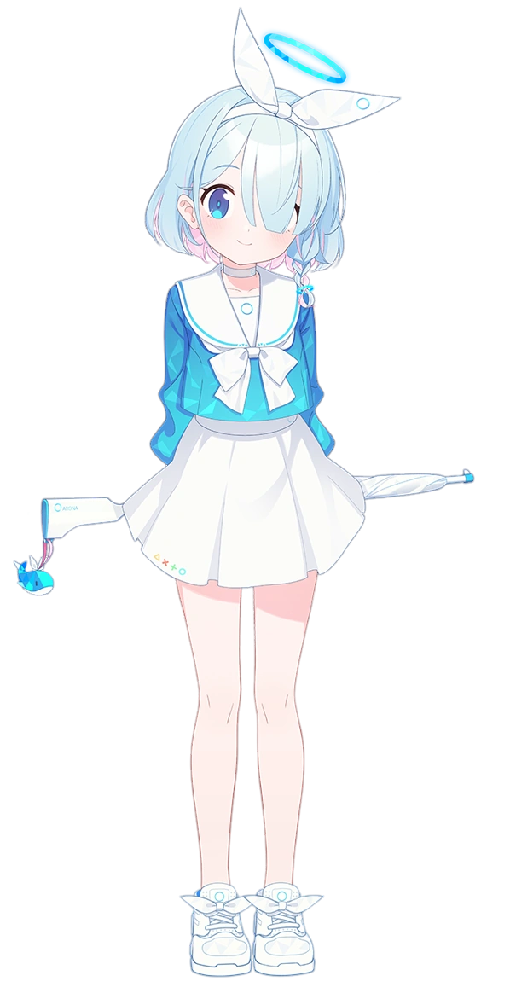
공식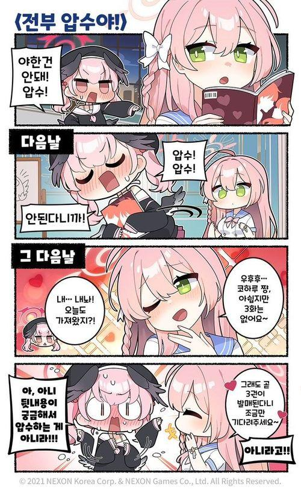
준공식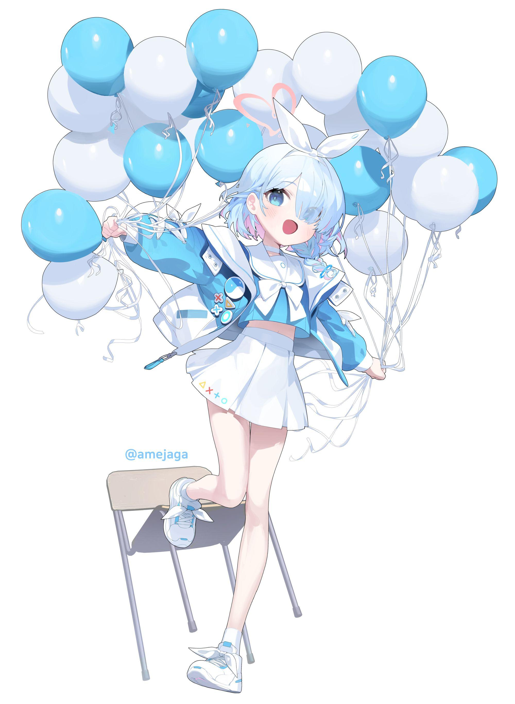
rank01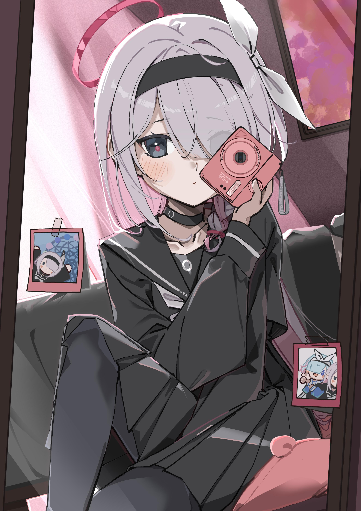
rank02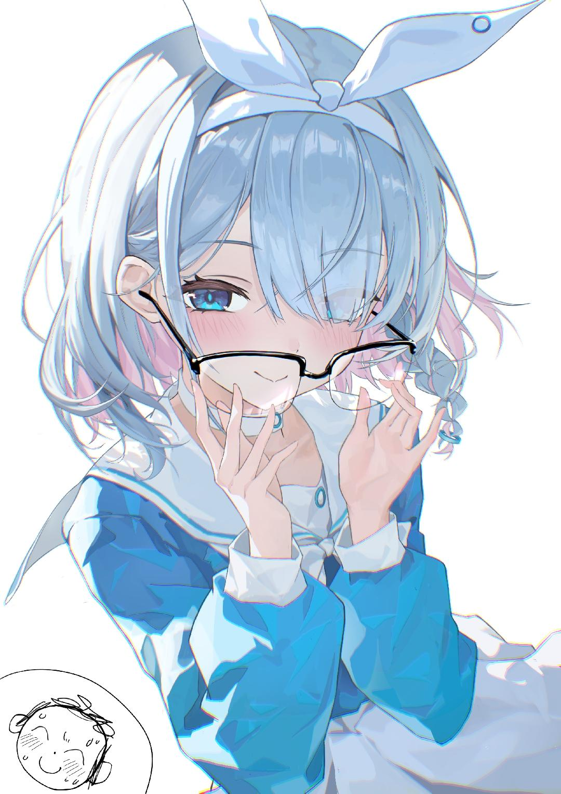
rank02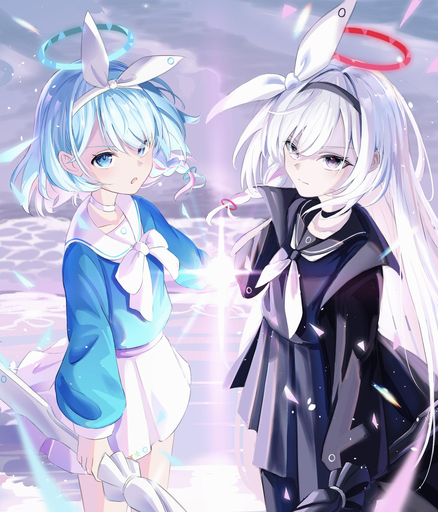
rank02프라나 (기본)
Plana · プラナ평행세계의 싯딤의 상자 OS 시스템 관리자.
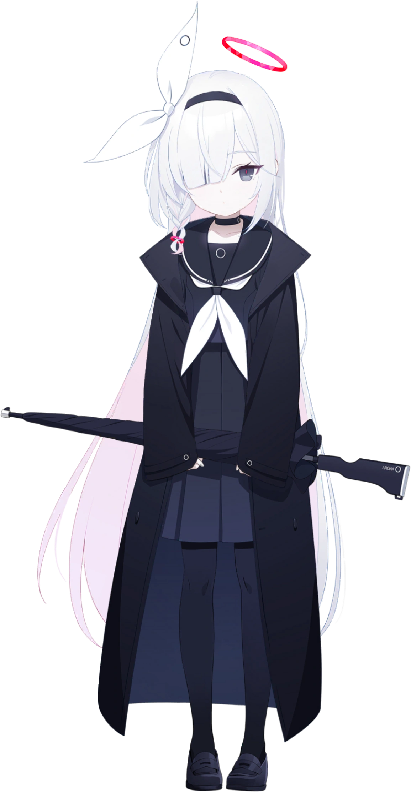
공식 준공식
준공식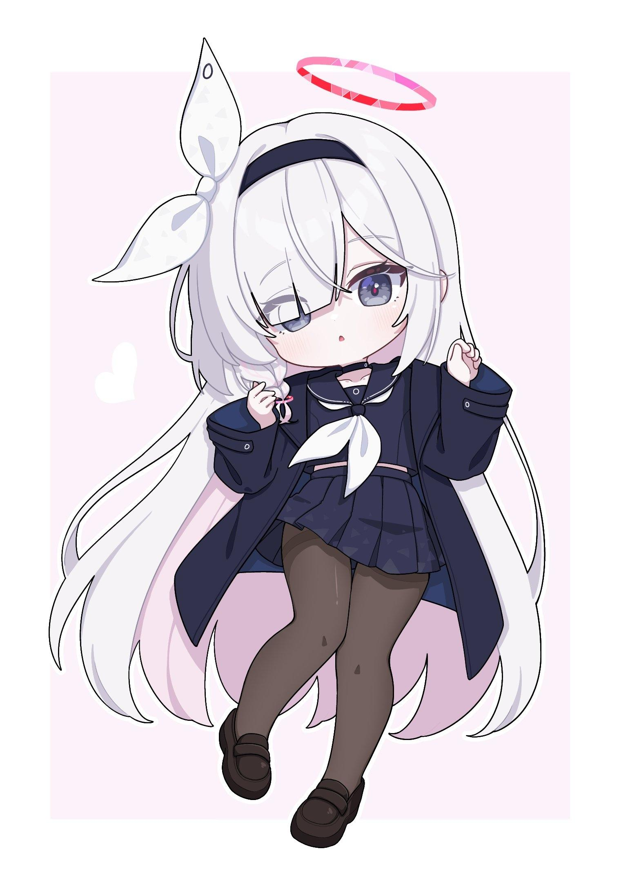
rank01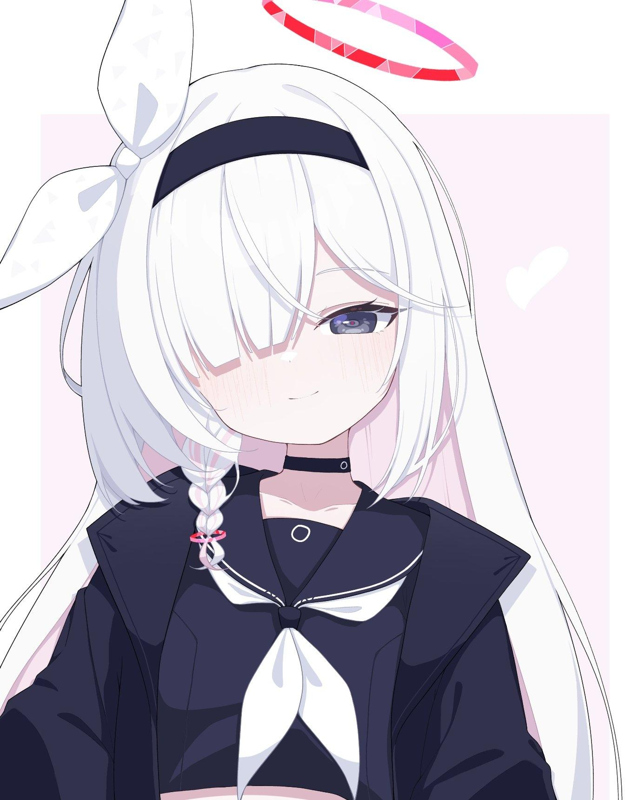
rank01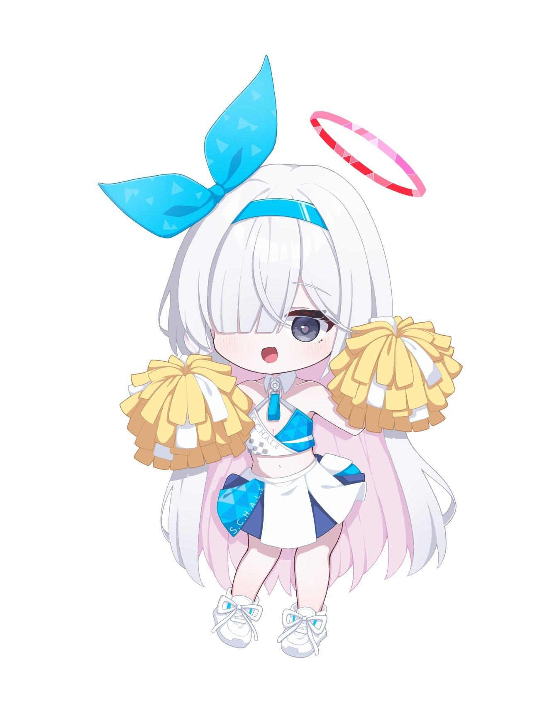
rank01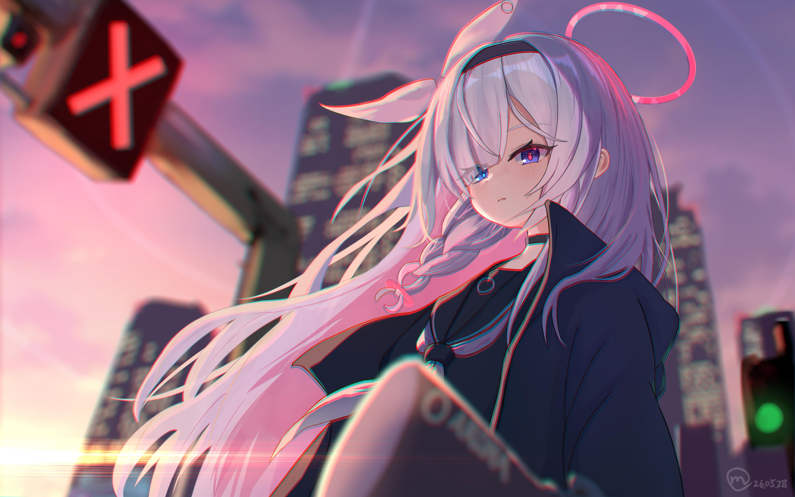
rank02쿠로사키 코유키 (바니걸)
Kurosaki Koyuki · 黒崎コユキ선상의 바니 체이서 이벤트에서 첫 등장한 코유키의 바니걸 의상 스탠딩. SD 모델링이 존재하나 플레이어블 미출시 상태.
 공식
공식 준공식
준공식 rank01
rank01 rank01
rank01 rank02
rank02소라사키 히나 (파자마)
Sorasaki Hina · 空崎ヒナ에덴조약 편 3장 및 소야곡 이벤트에서 등장한 히나의 잠옷/파자마 스탠딩 CG.
 준공식
준공식 rank01
rank01 rank01
rank01 rank01
rank01아사가오 하나에 (치어리더)
Asagao Hanae · 朝顔ハナエ황륜대제 및 플레이볼 이벤트에서 등장한 치어리더 복장의 하나에 스탠딩.
 준공식
준공식 rank01
rank01 rank01
rank01 rank01
rank01하누마 마코토 (드레스)
Hanuma Makoto · 羽沼マコト빛으로 나아가는 그녀들의 소야곡 이벤트 파티에서 착용한 마코토의 정장 드레스 의상.
 준공식
준공식 rank01
rank01 rank01
rank01 rank01
rank01조마에 사오리 (사복)
Jomae Saori · 錠前サオリ생계를 위해 아르바이트를 하며 입었던 사오리의 일상 사복 일러스트.
 준공식
준공식 rank01
rank01 rank01
rank01 rank01
rank01유리조노 세이아 (수영복)
Yurizono Seia · 百合園セイア티파티의 여름 휴가 스토리 CG에서 등장한 세이아의 청초한 수영복 의상.
 준공식
준공식 rank01
rank01 rank01
rank01 rank01
rank01에이미 (기본)
Eimi · エイミ밀레니엄 학원 초현상특무부의 요원. 생각을 알기 어려운 4차원 소녀로 말수가 거의 없고 아무 이유 없이 멍하니 서 있는 경우가 잦다. 하지만 세미나의 의뢰를 받아 임무를 수행할 때만큼은 그 누구보다 효율적으로 움직여 목표를 달성해낸다.
하루나 (기본)
Haruna · ハルナ게헨나 미식연구회의 부장. 겉모습만 두고 보면 부잣집 아가씨와 같은 고고한 기품을 드러내고 있지만, 먹는 일만 관련되면 앞뒤를 가리지 않는 열혈 속성의 미식가이다. 식탐에 비해 입이 짧아 음식은 많이 먹지 못하는 편. 좋아하는 음식은 모츠나베나 호루몬 구이 같은 기름진 음식이라고 한다.
히후미 (기본)
Hifumi · ヒフミ트리니티 보충수업부의 다정다감한 소녀. 외모도 성적도 특출나지 않지만, 모나지 않고 상냥한 성품 덕분에 인기가 많다. 주변 사람들의 고민이나 이야기를 잘 들어주지만, 그 때문에 의도치 않게 분위기에 휩쓸려 말썽을 일으키는 경우도 있다.
이오리 (기본)
Iori · イオリ게헨나 학원 선도부의 냉혹한 스페셜리스트. 선도부의 행동대장으로 규칙을 위반한 학생들을 발견하면 압도적인 힘으로 무자비하게 처단한다. 일 처리도 빠르고 전투 센스도 나쁘지 않은 편이지만, 적을 발견하면 앞뒤를 가리지 않고 달려드는 무대포 성향 때문에 단순한 함정에도 쉽게 빠지곤 한다.
마키 (기본)
Maki · マキ밀레니엄 학원의 해커 동아리, 베리타스의 부원. 그래피티 그리기를 좋아하는 장난꾸러기 소녀로, 베리타스의 엠블렘 또한 그녀의 작품이다. 매사에 진지하지 않고 무슨 일이든 가볍게 여기기 때문에 다른 동아리와의 트러블이 잦은 편이다.
네루 (기본)
Neru · ネル밀레니엄 학원의 에이전트 조직 C&C의 부장. 언뜻 메이드복 위로 스카잔을 입은 꼬마 폭력배로 보이지만, 그 실상은 밀레니엄 최강의 처리능력을 가진 에이전트다. 그녀의 콜사인인 더블오는 밀레니엄 내에서 승리를 약속하는 아이콘처럼 여겨지고 있다.
이즈미 (기본)
Izumi · イズミ게헨나 미식연구회의 일원으로 뭐든지 잘 먹는 먹보 소녀. 음식을 사랑하다 못해 남들이 질색하는 괴식도 가리지 않고 곧잘 먹어 치운다.
슌 (기본)
Shun · シュン산해경 훈육지원부, 매화원의 교관. 매화원의 어린 학생들을 가르치는 교관으로, 상냥하고 너그러운 성품 덕분에 매화원 학생뿐만 아니라 산해경의 다른 학생들로부터도 많은 신임을 받고 있다. 오랫동안 교관 업무를 수행하느라 어린 학생들의 짓궂은 장난에도 좀처럼 화를 내는 일이 없지만, 자신의 나이를 언급하는 것만큼은 예민하게 반응한다.
스미레 (기본)
Sumire · スミレ밀레니엄 트레이닝부의 리더. 언제나 열정적으로 운동에 매진하는 체육계 소녀로, 세상의 모든 문제는 운동으로 해결할 수 있다고 믿는 근육 뇌의 소유자이기도 하다.
츠루기 (기본)
Tsurugi · ツルギ트리니티 정의실현부의 부장이자, 트리니티의 공식 전략병기. 호전적이고 폭력적인 성격의 소유자로 마음에 들지 않는 것이 있다면 일단 부수고 본다. 부부장인 하스미의 능력 덕분에 정의실현부는 가까스로 유지되는 중. 통제할 수 없는 광견 같은 츠루기지만, 선생님 앞에서는 부끄러움을 감추지 못하는 소녀 같은 면모를 보이기도 한다.
아카네 (기본)
Akane · アカネ밀레니엄 학원의 비밀 조직, C&C의 에이전트. 콜사인은 제로쓰리로 "청소"에 특화된 요원이다. 부드러운 인상을 바탕으로 적진에 침투하여 폭약으로 진영을 깨끗이 청소해 버리기 때문에 "청소의 명인"이라는 이명으로도 알려져 있다.
치세 (기본)
Chise · チセ백귀야행 학원 음양부에 소속된 전파계 소녀. 하이쿠와 같은 전통문화를 무척이나 좋아하여 음양부에 입부하였다. 외모와 분위기에서 풍기는 특유의 신비로운 느낌 덕분에 백귀야행의 학생들로부터 선망의 대상으로 여겨지고 있지만, 본인은 그런 사실을 거의 인지하지 못하고 있다.
아카리 (기본)
Akari · アカリ게헨나 미식연구회의 부원. 여려 보이는 겉모습과 달리 많은 양의 음식을 먹어 치우는 대식가로, 키보토스 내 대식대회에서 챔피언 자리를 놓치지 않는 우수한 푸드 파이터다. 기본적으로는 온화하고 선량한 성품의 소유자지만, 악동이 많은 게헨나 학원의 학생답게 타인을 골탕 먹이는 흉악한 장난에도 일가견이 있다.
하스미 (기본)
Hasumi · ハスミ트리니티 정의실현부의 2인자. 광란의 아이콘인 부장 츠루기를 대신해 정의실현부의 전술지휘관 역할도 담당하고 있다. 때문에 침착한 지적인 트리니티 여학생처럼 보이기도 하지만, 그녀 역시 정의실현부의 일원이다. 누구보다도 침착하게, 무모한 행동을 하기도 한다.
노노미 (기본)
Nonomi · ノノミ아비도스 대책위원회의 일원. 다정다감하고 상냥한 성품의 소유자로 극단적인 성격이 많은 대책위원회의 회원들을 하나로 뭉쳐주는 정신적 지주 역할을 하고 있다. 겉으로 내색하진 않지만 부유한 부잣집의 영애로, 대책위원회 간식비의 대부분은 그녀의 용돈에서 나오고 있다.
카요코 (기본)
Kayoko · カヨコ흥신소 68의 과장. 다른 흥신소 68의 멤버들과는 다르게 악의가 없음에도 불구하고 타고난 얼굴이 무섭다는 이유 하나만으로 불량배로 오인받곤 한다. 카요코 본인은 그런 오해들에 대해 침묵으로 일관하는 중이지만, 오히려 그 때문에 무서운 사람이라는 이미지가 더욱 짙어지고 있다.
무츠키 (기본)
Mutsuki · ムツキ흥신소 68의 행동대장 겸 돌격대장. 어느 정도 양심의 가책을 느낄 줄 아는 아루와는 달리 거리낌 없이 악행을 저지르고 말썽을 즐기는 소악마 같은 소녀. 아루와는 오랜 친구 사이로 그녀의 허세를 누구보다도 잘 이해하고 있지만, 딱히 배려해주지는 않는다.
준코 (기본)
Junko · ジュンコ게헨나 미식연구회의 까탈스러운 폭식가. 괴식을 먹어 치우거나 폭식을 일삼는 다른 미식연구회의 부원들과는 달리 상식적인 미식을 즐기는 편이나, 맛있는 음식을 눈앞에 두면 이성을 잃어버리곤 한다.
세리카 (기본)
Serika · セリカ아비도스 대책위원회의 깐깐한 회계. 잔소리가 심하고, 자신의 감정을 드러내는 데 주저함이 없다. 입버릇처럼 '이딴 학원, 망해버려!' 라는 말을 내뱉곤 하지만, 실은 남몰래 학원의 빚을 갚기 위해 아르바이트를 하고 있을 정도로 학원에 대한 애정이 깊은 편이다.
츠바키 (기본)
Tsubaki · ツバキ백귀야행 학원 수행부의 부장. 평소 수행하는 것은 다름 아닌 '보다 편안하고 완전한 숙면'을 위한 수행. 그 덕에 앉아서도, 서서도, 심지어 밥을 먹으면서도 잘 수 있게 되었다. 그래서 붙은 별명이 잠자는 공주. 그렇게 늘 꾸벅꾸벅 조는 것 같지만, 밤이 찾아오면 거리를 지키기 위해 몰래 활약한다.
하루카 (기본)
Haruka · ハルカ흥신소 68의 정직원. 어둡고 음침한 성격 때문에 어릴 적부터 계속 괴롭힘을 당해오다가 최근에야 아루의 도움으로 괴롭힘에서 벗어나게 되었다. 이후 흥신소 68의 정규직 막내로 활동하는 중. 소심하고 자존감이 낮지만 발상만큼은 흥신소 직원 중 제일 무서울지도?
아스나 (기본)
Asuna · アスナ밀레니엄 학원의 비밀 조직, C&C의 에이전트. 콜사인은 제로원으로 탁월한 동물적 감각과 직관으로 수많은 문제를 헤쳐나온 베테랑이다. 임무 중 멋대로 사람을 믿고 정체를 드러내거나, 의심되는 물건은 모조리 부수는 등 이해할 수 없는 행동을 자주 저지르지만, 성과는 언제나 좋은 편이다.
코토리 (기본)
Kotori · コトリ밀레니엄 학원, 엔지니어부의 부원. 물리학이나 기계의 메커니즘에 대해 떠들기 좋아하는 수다쟁이로, 밀레니엄에서 기계와 관련된 말썽이 발생하면 상황 해설을 하기 위해 현장에 제일 먼저 나타난다.
스즈미 (기본)
Suzumi · スズミ트리니티 학생들의 안전을 책임지는 자경단의 멤버. 트리니티의 학생들이 다른 학원에게 습격당하는 일이 잦아지자, 이를 막기 위해 자진하여 거리 순찰을 나서기 시작했다. 불타는 정의감 때문에 냉철하고 차가운 성격으로 오해받는 일이 잦지만, 사실은 상냥한 면모도 가지고 있다.
피나 (기본)
Pina · フィーナ백귀야행 학원에 입학한 협객을 동경하는 소녀. 항상 쾌활하고 명랑하며, 다른 사람을 돕는 것에 즐거움을 느낀다. 협객에 대해서 아는 것이라고는 영화에서 본 게 다이기 때문에 실제 협객과 거리가 있지만. 자신이 꿈꾸는 협객의 길을 걷는데, 망설임이 없는 소녀.
히비키 (기본)
Hibiki · ヒビキ밀레니엄 학원, 엔지니어부의 부원. 다른 학생들에 비해 사교성이 부족하고 말투도 어눌한 편이지만, 타고난 공학적 재능을 바탕으로 여러 가지 신기한 물건들을 발명하고 있다. 그녀의 발명품은 대부분 흠잡을 곳 없는 걸작이지만, 이상한 기능이 꼭 하나씩 포함되어 사용자를 당혹게 만들곤 한다.
카린 (기본)
Karin · カリン밀레니엄 학원의 비밀 조직, C&C의 에이전트. 콜사인은 제로투로 강력한 화력을 사용한 후방 지원을 담당하고 있다. 사나워 보이는 외견과는 달리 C&C의 요원 중에서도 가장 신중한 성격의 소유자로, 작전 중 폭주하는 아스나나 아카네를 말리느라 애를 먹고 있다.
사야 (기본)
Saya · サヤ산해경 학원의 천재 발명가. 소학교 시절에 이미 학위를 여섯 개나 땄을 정도의 천재지만, 천재라는 별명보다는 사람을 골탕 먹이고 말썽을 일으키는 트러블 메이커로 더 잘 알려져 있다. 함께 다니는 쥐, 네즈스케는 어릴 적부터 함께 한 단짝으로 사야에게는 소중한 가족과도 같은 존재이다.
아이리 (기본)
Airi · アイリ트리니티 방과후 디저트부 소속의 명랑한 부원. 느긋하고 여유로운 성품의 소유자로 친구들과 디저트를 먹으며 떠드는 시간을 무엇보다 소중히 여긴다. 좋아하는 디저트는 달콤한 아이스크림으로, 최근에는 민트초코 맛에 푹 빠져있다.
후우카 (기본)
Fuuka · フウカ게헨나 학원의 식당을 관리하는 급양부의 부원. 게헨나에서 보기 드문 상냥하고 성실한 학생으로 매일 아침마다 게헨나 학생들을 위해 수백인 분의 음식을 준비하고 배식하고 있다. 음식 솜씨는 좋은 편이지만, 식당의 인력 부족으로 인해 실력을 평가 절하당하는 중. 하지만 그녀는 포기하지 않고 더 나은 식단을 제공하기 위해 꾸준히 노력하고 있다.
하나에 (기본)
Hanae · ハナエ트리니티 구호기사단의 명랑하고 쾌활한 신입생. 매사에 긍정적이고 활기찬 성격의 소유자지만, 환자를 보았다 하면 지나치게 요란을 떨어 상황을 더욱 악화시키곤 한다. 여러모로 엉뚱한 소녀이지만 그녀의 응원을 받은 환자는 신기하게도 어떤 병이든 금세 치유된다고 한다.
하레 (기본)
Hare · ハレ밀레니엄 학원의 해커 집단, 베리타스의 엔지니어. 머리 좋은 사람이 많기로 유명한 밀레니엄 학원에서도 손꼽히는 천재로 밀레니엄의 최첨단 기기들은 대부분 그녀의 손에서 개발되었다. 하지만 이런 성과에도 불구하고 잘난척하거나 으스대지 않고 다른 학생들의 말에 귀를 기울여주는 상냥한 소녀다.
우타하 (기본)
Utaha · ウタハ밀레니엄 학원, 엔지니어부의 부장. 엔지니어부의 부장이라는 직함을 증명이라도 하듯 다양한 로봇을 발명하였으며, 특히 그녀의 애완 로봇 "천둥이"는 PMC의 전투용 오토마타 수백 대에 달하는 전투능력을 갖추었다고 평가받고 있다.
아야네 (기본)
Ayane · アヤネ아비도스 대책위원회의 성실한 서기. 원론과 규정을 중시하는 원칙주의자로 아비도스 고등학교의 부흥을 위해 성실하게 노력하고 있다.
치나츠 (기본)
Chinatsu · チナツ게헨나 학원 선도부의 보건 담당. 규정, 규율, 절차를 중시하는 선도부의 몇 안 되는 상식인으로, 아코나 이오리 같은 다른 선도부원들이 폭주하지 않도록 잡아주는 브레이커 역할을 맡고 있다. 말투가 딱딱하여 일견 다른 선도부원들처럼 차가운 인상을 주곤 하지만, 귀여운 동물 앞에서는 한없이 약해지는 상냥한 소녀다.
코타마 (기본)
Kotama · コタマ밀레니엄 학원의 해커 집단, 베리타스의 해커. 특기는 도청으로, 타인의 비밀스러운 이야기를 엿듣는 것을 좋아한다. 대인관계는 서투른 편으로 1학년에게도 존댓말을 할 정도로 사람을 어려워한다. 현실에서는 소심하고 말수가 적은 소녀이지만, 넷상에서는 놀랄만한 달변가가 된다.
주리 (기본)
Juri · ジュリ게헨나 학원의 식당을 관리하는 급양부의 부원. 후우카와 마찬가지로 학생들을 위해 열심히 음식을 만드는 노력파 소녀지만, 그녀의 요리 솜씨는 나쁜 수준을 넘어 괴멸적인 지경인지라 급식에 별 도움이 되지 않고 있다. 하지만 후우카의 격려와 지도 속에 그녀는 오늘도 더 나은 요리를 만들기 위해 노력하고 있다.
세리나 (기본)
Serina · セリナ트리니티 구호기사단 소속의 상냥한 소녀. 봉사활동을 즐겨 하는 선량한 성품의 소유자로, 건강에 관해서는 지나칠 정도로 걱정이 많기 때문에 주변의 학우들로부터 엄마 같다는 평가를 종종 듣기도 한다. 다툼과 분쟁을 싫어하는 심약한 성품의 소유자지만, 평화를 위협하는 적 앞에서는 언제나 단호하게 맞서 싸울 준비가 되어 있다.
시미코 (기본)
Shimiko · シミコ트리니티 도서부 소속의 사서. 책을 정말 좋아하는 독서광 소녀로 트리니티 도서관의 방대한 장서를 모두 읽어 본 몇 안 되는 학생 중 하나이다. 책을 읽는 것만큼 책을 권하는 것도 좋아하여, 상대를 만나면 상대의 취향에 맞는 책을 추천해주려고 한다.
요시미 (기본)
Yoshimi · ヨシミ트리니티 방과후 디저트부 소속의 부원. 작은 키와 체형이 콤플렉스인 난폭한 소동물 같은 소녀. 늘 어른스러워지고 싶다고 생각하지만, 생각하는 게 얼굴에 그대로 드러나기에 큰 성과는 없다. 다만 디저트 카페를 순회하며 한정판 디저트를 맛볼 때만큼은 누구보다 활짝 웃는다.
마시로 (기본)
Mashiro · マシロ트리니티 학원 정의실현부의 성실한 부원. 키에 맞지 않는 거대한 대물저격총을 가지고 다니며 묵묵히 화력지원 임무를 수행한다. 말수가 적은 편이지만 낯을 가리거나 대인관계가 서투른 것은 아니며, 정의와 관련된 화제를 언급하면 오히려 말이 많아지기도 한다.
이즈나 (기본)
Izuna · イズナ백귀야행 학원 인법연구부 소속의 소녀. 밝고 활기찬 성격을 가진 소녀지만, 남들이 이해하지 못하는 소중한 꿈을 추구해온 결과, 이제까지 외톨이로 지내왔다. 그 꿈이란 바로 키보토스 최고의 닌자가 되는 것. 오늘도 어엿한 닌자가 되기 위해, 그리고 훌륭한 닌자가 되기 위해, 이즈나는 선생님을 '주군!' 이라고 부르며 갖은 활동에 매진하고 있다.
시즈코 (기본)
Shizuko · シズコ백귀야행 학원 마츠리운영관리부의 부장. 동시에 백귀야행의 전통 찻집 <백야당>의 마스코트 소녀. 평소 덜렁이를 연기하지만, 그건 어디까지나 팔리는 아이돌로서 꾸며낸 모습. 실제로는 축제의 성공과 백야당의 매출을 위해서라면 어떤 일이든 해내는 프로 내숭쟁이. 다만 매사 감정 표현이 솔직하기 때문에 친한 친구들은 물론, 선생님에겐 전부 들통나 있다.
아리스 (기본)
Aris · アリス밀레니엄 학원 게임개발부 소속의 부원. 폐허에서 발견된 정체를 알 수 없는 소녀로, 나이를 포함한 모든 정보가 추정 불가능하다. 현재는 미도리와 모모이를 따라 게임을 즐기며 중증의 게임 매니아가 된 상태. 어눌한 회화의 대부분을 레트로 게임의 대사로 대체하고 있다.
미도리 (기본)
Midori · ミドリ밀레니엄 학원, 게임개발부의 일러스트레이터. 쌍둥이 언니인 모모이와 함께 게임개발부에서 게임을 개발하고 있다. 소심하고 내성적인 성격의 소유자로 활발한 성격의 언니와는 사이가 좋지 못한 편이었지만, 게임에 대한 열정으로 의기투합하여 현재는 둘도 없는 단짝이 되었다.
모모이 (기본)
Momoi · モモイ밀레니엄 학원, 게임개발부의 시나리오 라이터. 쌍둥이 여동생인 미도리와 함께 게임개발부에서 게임을 개발하고 있다. 가볍고 쾌활한 성격의 소유자로 소심한 성격의 여동생과는 사이가 좋지 못한 편이었지만, 게임에 대한 열정으로 의기투합하여 현재는 둘도 없는 단짝이 되었다.
체리노 (기본)
Cherino · チェリノ붉은겨울 학원의 학생회장. 권력에 대한 집착과 욕심이 어마어마하며, 매주 혁명으로 실각해도 어떻게 해서든 학생회장의 자리에 복귀하곤 한다. 코에 달고 있는 가짜 콧수염은 권위의 상징으로, 체리노는 자신의 권위가 이 콧수염에서 나온다고 믿고 있다.
노도카 (기본)
Nodoka · ノドカ붉은겨울 학원으로부터 정학 처분을 받고 구교사 227호에서 근신 중인 특별 학생. 정학 사유는 망원경으로 선생님을 지속적으로 관찰하며 스토킹했기 때문이다. 그녀는 세상의 아름다운 것을 직접 눈으로 관찰하고 싶어 하며, 선생님 또한 그 대상으로 여기고 있다. 227호 특별반에서 오랫동안 고생을 해 온 탓에 가난뱅이 근성이 몸에 잔뜩 배어 있다.
유즈 (기본)
Yuzu · ユズ밀레니엄 게임개발부의 부장. 사람을 대하는 것을 어려워하는 대인기피증 소녀로 대부분의 시간을 게임개발부 내의 캐비닛 안에서 보내고 있다. 하지만 게임에 대한 열정만큼은 그 누구에게도 뒤지지 않는다. 게임을 제작하는 것과 플레이하는 것 모두를 좋아한다.
아즈사 (기본)
Azusa · アズサ트리니티 보충수업부의 얼음마녀. 다니던 학교를 자퇴하고, 모종의 이유로 트리니티 학원에 다니게 되어 다시 학업에 힘쓰고 있다. 외로움을 많이 타면서도 다른 사람들에게 폐를 끼칠까 자발적으로 관계를 멀리하고 있어서 보충수업부의 학생들에게 걱정을 끼치고 있다.
하나코 (기본)
Hanako · ハナコ보충수업부의 다정다감한 아가씨. 겉으로 보기엔 정말 정숙하고 기품있는 아가씨로 보이지만, 입을 열면 온갖 에로한 말들을 쏟아내는 문제아다. 하나코의 본모습을 아는 보충수업부는 하나코가 입을 열 때마다 긴장하고 주변을 살펴보게 된다.
코하루 (기본)
Koharu · コハル트리니티 보충수업부의 일원. 본래 정의실현부 소속이었지만 성적이 떨어지며 유급 위기에 처해 강제로 보충수업부에 편입되었다. 본인은 스스로를 엘리트라고 생각하고 있지만, 실제로는 학교 수업도 따라가지 못할 정도의 바보. 야한 잡지를 수집하는 취미가 있어 사소한 것을 보고도 금세 야한 망상을 부풀려 부끄러워한다.
아즈사 (수영복)
Azusa · アズサ난생처음 바다라는 곳에 놀러 오게 된 보충수업부의 얼음마녀. 평소처럼 다른 사람들에게 폐를 끼치지 않기 위해 차갑고 냉정한 모습을 유지하려 하지만, 즐거운 바다의 분위기와 함께 온 친구들이 그녀를 가만히 내버려 두지 않는다. 때문에 다른 사람들의 시선을 계속 신경 쓰고 있지만, 주변 사람들이 보기에는 언제나의 아즈사일 뿐이다.
마시로 (수영복)
Mashiro · マシロ츠루기 부장을 따라 여름의 해변을 찾은 정의실현부의 성실한 부원. 다른 학생들이 여름의 추억을 잔뜩 만들기 위해 놀러 다니는 중에도 마시로는 훈련을 멈추지 않는다. 왜냐하면 그것이 정의라고 믿고 있기 때문에.
츠루기 (수영복)
Tsurugi · ツルギ청춘의 낭만을 좇아 여름 바다를 찾아온 트리니티 정의실현부의 부장. 모처럼 얻은 여름 휴가를 즐기기 위해, 트리니티의 전략병기라고 불릴 만큼 폭력적인 자신의 기질을 억눌러가며 청춘을 즐기려 하지만…… 여름의 바다는 그녀의 뜻대로 흘러가지 않는다.
히후미 (수영복)
Hifumi · ヒフミ친구와 함께 바닷가를 방문한 트리니티 보충수업부의 다정다감한 소녀. 바다를 본 적 없다는 친구를 위해 학교 비품인 크루세이더 전차를 몰래 빌리려고 했지만, 정의실현부에게 그 사실을 들키며 거대한 말썽에 휘말리게 되었다. 전차에 탄 상태에서도 본래의 덜렁거리는 기질은 여전하여, 실수로 전차를 급발진시키는 등, 말썽을 키우는 데 일조하고 있다.
이오리 (수영복)
Iori · イオリ하계 합숙 훈련에 참여한 게헨나 선도부의 냉혹한 스페셜리스트. 다른 선도부원들과 함께 게헨나의 문제아들이 바닷가에서 일탈을 저지르지 못하도록 열심히 감시하고 있다. 겉으로는 내색하고 있지 않지만, 바보들이 끊임없이 나타나는 바람에 모처럼의 여름 합숙이 엉망이 된 것을 내심 못마땅하게 여기고 있다.
이즈미 (수영복)
Izumi · イズミ게헨나 미식연구회의 일원으로 무더운 여름에도 식욕이 왕성한 먹보 소녀. 여름을 맞이해, 한 손엔 수박을, 다른 한 손에는 아이스박스를 들고선 이름난 여름 별미를 찾아 이번엔 특별히 키보토스의 해변가를 찾아왔다. 초코맛 장어구이, 매운맛 빙수, 민트초코를 뿌린 수박 등등. 키보토스에서도 둘째 가라면 서러울 각종 별미를 추구하는 그녀의 괴식 탐구 활동은, 뜨거운 여름 바다에서도 계속해서 이어진다.
슌 (어린이)
Shun · シュン사야의 비약을 마시고 어린 시절의 몸으로 되돌아가게 된 매화원의 교관. 비록 몸은 어려졌지만 정신은 그대로이기 때문에, 나이가 들었을 때와 마찬가지로 의젓하게 행동하려 하지만… 어려진 몸은 어째서인지 그녀를 자꾸 본능으로 이끈다.
키리노 (기본)
Kirino · キリノ발키리 경찰학교 생활안전국의 열혈 경찰 학생. 학원도시의 치안을 유지하는 선배들의 모습을 동경해 발키리 경찰 학교에 진학하였으나, 사격솜씨가 형편 없었던 탓에 한직인 생활안전국으로 전과하게 되었다. 하지만 여전히 범인을 멋지게 제압하는 경찰이 되고자 하는 꿈을 버리지 않고 여러 방면에서 노력하고 있다.
사야 (사복)
Saya · サヤ바쁜 일상에서 벗어나 모처럼 여유로운 휴일을 보내게 된 산해경의 천재 발명가. 연구실에 틀어박혀 신약 연구에만 몰두하는 평소의 모습과는 달리, 휴일의 사야는 스케이트 보드를 타고 거리를 누빌 정도로 활동적이다. 하지만 새로운 것을 끊임없이 탐구하는 그녀의 지적 호기심만큼은 휴일에도 변함이 없다.
네루 (바니걸)
Neru · ネル특별한 임무를 수행하기 위해 바니걸 복장으로 갈아입은 C&C의 부장. 평소라면 절대로 입지 않을 법한 종류의 옷이지만, 임무를 위해서는 마다하지 않는다. 작전을 위해 평소의 성질을 죽인 채 많은 걸 참고 있지만, 그중에도 겉에 걸치는 스카잔만큼은 포기하지 않는다.
카린 (바니걸)
Karin · カリン작전의 최전선에 직접 참가하게 된 C&C의 에이전트. 조금의 불평불만도 없이, 복장에 신경 쓰지 않고 임무의 달성만을 생각한다. 그래도 평소보다 집중되는 시선은 아주 조금 부담스럽다.
아스나 (바니걸)
Asuna · アスナ잠입을 위해 바니걸 복장으로 갈아입은 C&C의 에이전트. 평소의 메이드복 차림이 아닌 바니걸 복장을 하고 있지만, 다른 멤버들과 달리 여전히 높은 텐션을 유지하고 있다. 되려 아스나는 새로운 장소에서 접하는 신선한 경험들이 마냥 즐겁기만 하다.
나츠 (기본)
Natsu · ナツ트리니티 방과후 디저트부 소속의 일원으로, 트러블 메이커의 필두이자 자칭 로맨티스트. 묘하게 철학적인 말을 하거나, 만사를 디저트에 빗대어 표현하는 버릇이 있다. 늘 엉뚱한 일로 주변을 곤란하게 만들지만, 모두와 함께 로망을 공유하고 싶다는 순수한 마음 때문. 이야기하는 「로망」의 정의가 항상 바뀌기 때문에, 옆에서 보면 모두가 나츠에게 「휘둘리고 있다」는 인상을 부정할 순 없다.
마리 (기본)
Mari · マリー시스터후드 소속의 신실하고 자애로운 소녀. 언제나 상냥하고 부드러운 미소로 트리니티의 학생들을 맞이한다. 귀여운 인상이지만, 차분하고 마음이 편해지는 분위기라 상담하러 오는 학생들이 많다. 늘 스스로가 부족하다고 여기기 때문에, 다른 선배들처럼 훌륭한 시스터가 되겠다는 꿈을 가지고 있다.
하츠네 미쿠 (기본)
Miku · ミク노래 부르기를 좋아하는 명랑한 성격의 버추얼 싱어. 본래는 현실의 신체를 갖지 않은 가상의 존재였지만, 라이브 공연을 앞두고 키보토스의 기술력을 빌려 현실 세계로 나오게 되었다. 시간과 공간을 초월하여 노래를 전달할 수 있는 버추얼 싱어의 특성상 키보토스에도 그녀의 숨은 팬이 꽤 존재한다고 한다.
아코 (기본)
Ako · アコ게헨나 선도부의 선임 행정관이자 선도부장 히나의 비서. 언제나 히나의 곁에서 머무르며 그녀를 보좌한다. 일견 보기에는 친절하고 선량한 인상의 소녀지만, 교칙위반자를 상대할 때는 사정을 봐주지 않고 무자비하게 진압한다. 게헨나의 학생들로부터 '히나의 펫'이라는 멸칭으로 종종 불리고 있지만, 본인은 그다지 신경 쓰지 않는다.
체리노 (온천)
Cherino · チェリノ227호 온천장에 휴양을 즐기러 온 붉은겨울 연방학원의 회장. 처음에는 허가 없이 온천장을 세운 특별반을 못마땅히 여겨 철거하려 했지만, 노도카를 비롯한 특별반 학생들의 접대가 생각보다 마음에 들어 온천장에 눌러앉게 되었다. 온천장의 휴게시설과 먹거리에는 대단히 만족하고 있지만, 정작 온천욕은 그리 좋아하지 않는다.
치나츠 (온천)
Chinatsu · チナツ공무 중 우연히 온천장을 방문하게 된 게헨나 선도부의 보건 담당. 새로운 의약품의 발주부터 온천개발부의 새로운 음모까지, 그녀를 괴롭히는 문제들은 설국의 온천장에서도 그치질 않지만…… 목가적인 온천장의 풍경은 일상에 지친 그녀를 살짝 나태하게 만든다.
토모에 (기본)
Tomoe · トモエ붉은겨울 사무국의 비서실장이자 체리노 회장의 최측근. 무슨 말이든 그럴싸하게 포장하여 전달할 수 있는 연설의 달인으로, 체리노 회장에 대한 충성심을 고취시키기 위해 학원 내에서 정기적으로 연설을 하고 있다. 체리노는 토모에가 자신의 카리스마에 감화되어 충성을 다하는 것이라고 믿고 있으나, 사실 토모에는 체리노를 맹목적으로 귀여워할 뿐이다.
노도카 (온천)
Nodoka · ノドカ거대한 온천장을 특별반의 학생들과 함께 운영 중인 227호 온천장의 여주인. 붉은겨울 사무국으로부터 정학 처분을 받은 상황 자체는 변치 않았지만, 구교사에서 갑작스럽게 온천이 터지며 거대한 돈방석에 앉게 되었다. 하지만 개성 강한 붉은겨울 연방학원의 다른 학생들이 여러 가지 이유로 영업을 방해하러 오는 탓에 그녀의 마음고생은 계속된다.
무츠키 (새해)
Mutsuki · ムツキ흥신소 68의 행동대장 겸 돌격대장. 새해를 맞이하여 아루와 함께 새해맞이 행사장을 찾아 놀러 왔다. 해가 바뀌어 평소보다 더 공을 들여 꾸미긴 했지만, 악행을 저지르고 그럴 때마다 일어나는 트러블을 보며, 깔깔 웃으며 좋아하는 모습은 어디 가지 않았다. 이번에도 어김없이 여러 이유로 고생하는 아루의 바로 곁에서, 새해를 만끽하기를 주저하지 않는 소악마 아가씨.
세리카 (새해)
Serika · セリカ아비도스 대책위원회의 똑 부러지는 회계. 대책위원회의 도움이 되고자 여러 아르바이트를 하며 노력해오던 성실한 소녀가 이번엔 새해를 맞이하여 새롭게 무녀(아르바이트)가 되었다. 보다 완벽한 무녀 아르바이트생을 연기해주면 높은 시급을 준다는 소리를 듣고 이번에도 어김없이 전력을 다해 노력하고 있다.
와카모 (기본)
Wakamo · ワカモ백귀야행 연합학원에서 정학당하고, 교정국에서는 탈옥까지 한 <일곱 죄수> 중 한 명. 평소 기분이 내키는 대로 무차별 파괴를 일삼고 있기에 <재액의 여우>라고 불리며 두려움의 대상이 되었다. 동기와 목적도 일체 수수께끼에 싸여 있으며, 들리기로는 가면 밑의 얼굴이 굉장히 무섭다. 악마처럼 흉측하다. 등의 소문이 끊이지 않지만, 어디까지나 소문은 소문일 뿐이다.
후부키 (기본)
Fubuki · フブキ발키리 경찰학교, 생활안전국의 느긋한 행정지도원. 느긋하고 여유로운 공무원의 삶을 동경하여 발키리 경찰학교에 입학하였다. 어쩌다 생활안전국에 사건이 들어와도 무성의한 태도로만 일관하며, 돈이나 명예에 휩쓸리지 않는 안빈낙도의 삶을 즐기고 있다. 가장 좋아하는 일은 도넛을 먹으며 라디오를 듣는 것.
세나 (기본)
Sena · セナ사건사고가 끊이질 않는 게헨나의 응급의학부 부장. 어떤 상황 속에서도 늘 무뚝뚝한 얼굴로 부상자들을 실어 나른다. 부상자들을 화물처럼 취급하는 딱딱한 모습과 달리, 게헨나 전역의 수많은 부상자를 이송하면서도 불평 한마디 한 적이 없다.
치히로 (기본)
Chihiro · チヒロ밀레니엄 학원의 해커 집단, 베리타스의 부부장. 우수한 해킹 실력을 갖춘 천재 프로그래머로, 업무에 필요한 일이라면 잠입이나 발로 뛰는 일도 마다하지 않는 행동파 해커이기도 하다. 악동이 많기로 유명한 베리타스 내에서는 보기 드문 상식인으로, 올바른 해커 윤리에 대해 부원들에게 늘 강조한다.
미모리 (기본)
Mimori · ミモリ백귀야행 학원 수행부의 상냥한 부부장. 언제나 부드러운 미소를 띤 채, 누구에게나 상냥하게 대하는 모습 덕에 모두에게 인망이 높은 소녀. 수행부의 부장인 츠바키와는 소꿉친구 사이, 그녀가 수행부에 들어온 이유는 어려서부터 읽었던 순정만화의 영향으로 요조숙녀가 되고자 하는 꿈을 가졌기 때문이다. 그 꿈을 이루기 위해, 오늘도 그녀는 요리나 청소에 매진하며 열심히 수행하고 있다.
우이 (기본)
Ui · ウイ트리니티 도서부의 도서부장. 사람보다 책이 좋다고 할 정도로 책을 사랑하는 소녀로, 특히 세월의 흔적을 느낄 수 있는 오래된 책을 좋아한다. 평상시에는 아무도 오지 않는 고서관에 틀어박혀 책을 읽거나 고서를 관리하며 시간을 보낸다.
히나타 (기본)
Hinata · ヒナタ시스터후드 소속의 성실하고 선량한 소녀. 트리니티 대성당의 관리라는 중책을 맡고 있는 책임자로, 주어진 일은 성실히 완수하며 누구에게나 친절하다. 하지만 덜렁대는 성격 탓에 실수를 자주 저질러 스스로에 대한 자신감은 부족한 편. 늘 들고 다니는 가방에는 거대한 설치형 유탄 기관총이 들어 있지만, 무거워하는 기색을 내비친 적은 한 번도 없다.
마리나 (기본)
Marina · マリナ붉은겨울 학원의 치안을 담당하는 보안위원회의 위원장. 교칙을 위반하는 학생을 발견하면 문답 무용으로 무자비한 징계를 내리기 때문에 피도 눈물도 없는 냉혈한으로 알려져 있으나, 사실은 별 생각 없이 체리노 회장의 명령을 수행하는 바보에 가깝다. 돌격이라는 말을 좋아하여 붉은겨울 학원 내에서 문제가 벌어지면 제일 먼저 뛰쳐나가지만, 타고난 길치라 길을 잃는 일이 잦다.
미야코 (기본)
Miyako · ミヤコSRT 특수학원 RABBIT 소대의 소대장. 콜사인은
사키 (기본)
Saki · サキSRT 특수학원 RABBIT 소대의 포인트맨. 콜사인은
미유 (기본)
Miyu · ミユSRT 특수학원 RABBIT 소대의 저격수. 콜사인은
카에데 (기본)
Kaede · カエデ백귀야행 학원 수행부 소속의 의욕 넘치는 부원. 원래는 동네에서 유명한 개구쟁이였지만, 우연히 츠바키와 미모리를 만난 뒤, 그 둘처럼 멋진 레이디가 되고 싶다는 생각을 가지고 수행부에 입부했다. 매일 같이 멋진 레이디가 되기 위한 수행을 게을리하지 않지만, 어째서인지 카에데가 수행을 했다 하면 그 대부분은 좌충우돌 트러블로 이어진다.
이로하 (기본)
Iroha · イロハ판데모니움 소사이어티 소속의 의원. 귀찮은 걸 극도로 싫어해 언제나 도망칠 궁리를 하고 있는 귀차니스트. 매번 독서하는 척을 하며, 남의 눈에 띄지 않도록 숨으려고 드는 이로하지만. 그 시도는 번번이 만마전(정확히는 마코토)에 의해 저지당하고 있다. 하는 수 없이 만마전의 업무를 대행하며 피곤한 나날을 보내고 있는 만마전의 실무자. 그런 이로하에게 있어 유일한 안식처가 되어주는 것은 만마전의 마스코트인 이부키 뿐이다.
미치루 (기본)
Michiru · ミチル백귀야행 학원 인법연구부의 부장 겸 동영상 채널 <소녀인법첩 미치룻치>의 운영자. 어째서인지 늘 근거 없는 자신감에 차 있는 소녀. 닌자라면 장르를 불문하고 무척이나 좋아하는 닌자 오타쿠이기도 하며, 인법연구부를 만든 것도, 닌자 관련 동영상 채널을 운영하는 것도 전부 그 때문. 키보토스에 전례 없는 닌자 붐을 불러오고자, 오늘도 인법연구부 멤버들과 함께 좌충우돌 종횡무진으로 활약하고 있다.
츠쿠요 (기본)
Tsukuyo · ツクヨ백귀야행 학원 인법연구부 소속의 소녀. 어렸을 때부터 커다란 덩치로 놀림받아온 탓에, 지금은 틈만 나면 어딘가에 숨으려고 드는 소녀. 언제나 우물쭈물하면서 타인과 제대로 대화도 나누지 못하는 소심한 츠쿠요지만, 정작 한 가지 결심하면 앞뒤 가리지 않고 해내는 실행력 또한 가지고 있다. 닌자에 대해선 잘 모르지만, 자신을 인정해준 미치루, 그리고 이즈나와 함께 인법연구부 활동에 매진하고 있다.
미사키 (기본)
Misaki · ミサキ말수가 적고 무뚝뚝한 인상을 가진 아리우스 스쿼드의 일원. 타인의 행동은 물론이고, 자신의 처우에도 별다른 관심이 없는 것처럼 무모한 행동을 할 때가 많다. 손목과 목을 언제나 두꺼운 붕대로 가리고 있다.
히요리 (기본)
Hiyori · ヒヨリ소심하고 우울한 인상을 지닌 아리우스 스쿼드의 일원. 언제나 무거운 짐을 잔뜩 짊어진 채 아리우스의 다른 학생들을 따라다니고 있다. 자존감이 낮고 네거티브한 성격의 소유자로 세상만사를 염세적으로 바라보고 있다.
아츠코 (기본)
Atsuko · アツコ늘 방독면을 쓴 채 신비로운 분위기를 풍기는 아리우스 스쿼드의 일원. 딱히 의도한 것은 아니지만, 식사나 수면을 할 때 이외에는 거의 언제나 방독면을 쓰고 있다. 스쿼드의 리더인 사오리로부터는 공주님이라고 불리고 있으며, 자신의 정체에 대해 많은 것을 숨기고 있다.
와카모 (수영복)
Wakamo · ワカモ<일곱 죄수> 중 한 명으로, 여름을 맞이하여 보다 화려한 꽃처럼 피어난 소녀. 그녀가 수영복 차림으로 바다를 찾은 건 어디까지나 선생님에게 보여주기 위해서이며, 얼굴에 미소를 띠고 있는 건 이 여름 바다에서 우연히 선생님을 발견했기 때문이다. 이처럼 뜨거운 여름 햇살 아래, 그 뜨거움에 지지 않을 만큼 선생님을 향한 정열적인 어프로치가 시작된, 언제나 변함없이 연심에 전력투구 중인 소녀.
노노미 (수영복)
Nonomi · ノノミ잔뜩 신이 난 아비도스 대책위원회의 일원. 학교 밖 휴양지에서도, 노노미는 여전히 모두를 챙겨주는 상냥함을 지니고 있다. 다 같이 바다로 향하는 것이 너무나 두근거린 나머지, 자기도 모르게 자비로 많은 준비물을 구매했다.
아야네 (수영복)
Ayane · アヤネ여름 바다로 날아온 아비도스 대책위원회의 서기. 평소의 고된 일상은 잊고 즐거운 휴양을 보내기로 마음먹었지만, 그럼에도 본연의 성실함이 완전히 숨겨지지는 않는다.
시즈코 (수영복)
Shizuko · シズコ여름에도 여전히 야심과 포부로 가득 찬 마츠리운영관리부의 부장님. 백야당을 전 키보토스적인 프랜차이즈로 성장시키기 위한 부장님의 열정은 오늘도 계속된다. 어떤 고난도, 장애물도 아이돌 펀치와 함께라면 문제 되지 않는다. 닿을 수 있는 것이라면, 무엇이든 쟁취해내고야 마는 여름의 소녀에게 두려울 것은 없다.
이즈나 (수영복)
Izuna · イズナ여름의 수련을 위해 바다를 찾아온 백귀야행 학원 인법연구부 소속의 소녀. 평소에도 무척이나 활기차지만, 이번엔 여름 태양의 에너지를 받은 탓인지 평소보다 200%는 더 기운찬 모습을 보여주고 있는 닌자 소녀. 보다 여름에 어울리는 닌자가 되기 위해, 오늘도 이즈나는 수련이라는 명목으로 이곳저곳을 쏘다니며 주군과 함께 여름을 만끽하고 있다.
치세 (수영복)
Chise · チセ여름 햇살 아래에서도 변함없이 멍하니 있기를 좋아하는 음양부의 전파계 소녀. 수영복 차림으로 갈아입으면서 아이돌력(?)이 더욱 올라간 덕분에, 그녀를 지켜보는 팬들의 아우성은 여름의 햇살만큼이나 강해졌지만. 역시나 본인은 전혀 신경 쓰는 기색 없이, 오늘도 치세는 선생님과 함께 반짝임을 찾거나, 거북이를 콕콕 찌르는 등 충실한 여름을 보내고 있다.
사오리 (기본)
Saori · サオリ아리우스 학원 내에서 엘리트 특수 부대로 취급되고 있는 아리우스 스쿼드의 리더. 목표를 위해서라면 수단과 방법을 가리지 않는 냉정한 모습과 때로 감정을 솔직하게 드러내는 뜨거운 모습이 공존하는 소녀. 게릴라 전술에 대해서는 타의 추종을 불허하는 전문가이지만, 정작 생활 상식에선 나사가 빠진 모습을 보이기도 한다. 아리우스 스쿼드의 전투력은 처음부터 끝까지 사오리가 훈련시킨 결과라고 한다.
모에 (기본)
Moe · モエSRT 특수학원 RABBIT 소대의 오퍼레이터.
콜사인은
카즈사 (기본)
Kazusa · カズサ느긋하고 조용한 성격의 <방과후 디저트부> 부원. 자신을 잘 드러내지 않는 편이며, 보통 다른 부원들의 행동에 묵묵히 따른다. 늘 주변의 기행에 휘말려 고생하지만 한편으론 그런 것들까지도 소중하게 생각한다.
코코나 (기본)
Kokona · ココナ산해경 훈육지원부, 매화원의 교관을 맡고 있는 1학년 학생. 본래는 소학교에 다닐 나이지만 뛰어난 학습능력을 인정받아 교관의 권한까지 받게 되었다. 원생들은 코코나를 '코코나 쨩'이라고 부르며 친근하게 따르곤 하지만, 코코나는 그 호칭을 그다지 달가워하지 않는다고 한다.
우타하 (응원단)
Utaha · ウタハ대운동회를 맞이해 응원단장 차림을 한 엔지니어부의 부장. 비록 갑작스럽게 맡게 된 응원 업무이지만, 의뢰를 맡으면 언제나 최선을 다하는 마이스터답게 그녀의 열정은 그 어떤 응원단장보다 뜨겁게 타오른다. 가끔은 그 열정이 지나쳐 본 목적을 잊어버리기도 하지만……
노아 (기본)
Noa · ノア밀레니엄 학원 학생회, <세미나>의 서기. 주된 업무는 세미나의 결정이나 회의 내용을 기록하는 일이며, 밀레니엄의 학생들이 개발한 제품의 특허를 등록하거나 감정하는 변리사 업무도 맡고 있다. 기억력이 매우 뛰어나기 때문에 한 번 보고 들은 내용은 거의 완벽하게 암기할 수 있다.
히비키 (응원단)
Hibiki · ヒビキ대운동회를 맞이해 치어리더 차림을 한 엔지니어부의 부원. 평소의 코스프레 취미로 다져진 재봉 스킬을 살려 엔지니어부의 부원들이 입을 의상을 직접 디자인하고 제작했다. 다만 치어리더 의상은 오래전에 만들어 두었던 것을 재활용한지라, 짧은 치마의 길이가 살짝 신경 쓰인다.
아카네 (바니걸)
Akane · アカネ잠입을 위해 바니걸 복장으로 갈아입은 C&C의 에이전트. 낯선 환경이지만 바니걸 복장을 솔선해서 준비하거나, C4를 터트려 장애물을 치워버리는 등, 평소와 변함없이 침착하게 작전을 수행해 나간다. 하지만 평소와는 다른 복장에 조금 들떴는지, 살짝 상기된 표정을 완전히 숨기지는 못하고 있다.
유우카 (체육복)
Yuuka · ユウカ황륜대제 참가를 위해 체육복으로 갈아입은 세미나의 회계. 밀레니엄 주최의 빅 이벤트를 앞두고 오랫동안 격무에 시달려왔지만, 개회 전날만큼은 다른 학생들의 배려로 잠을 푹 잤기 때문에 컨디션은 최상의 상태다. 주최교의 학생회 임원이자 실행위원으로서 유우카는 이성적으로 대회에 임하려 했지만, 승부욕 강한 학생들이 그녀의 호승심을 계속해서 긁어온다.
마리 (체육복)
Mari · マリー황륜대제 참가를 위해 체육복으로 갈아입은 시스터후드 소녀. 키보토스의 평화를 기원하는 축제라는 말에, 기쁜 마음으로 실행위원 업무에 자원하였다. 하지만 예상과 달리 대회 내내 다툼과 말썽이 끊이질 않고, 특유의 헌신적인 성격과 맞물려 계속해서 트러블에 휘말린다.
하스미 (체육복)
Hasumi · ハスミ황륜대제 참가를 위해 체육복으로 갈아입은 정의실현부의 부부장. 대외업무에 익숙지 않은 츠루기를 대신하여 실행위원을 맡게 되었다. 회장의 들뜬 분위기 속에서도 하스미는 냉정하게 실행위원으로서의 책무를 다하려 했지만…… 쉴 새 없이 나타나는 불량 학생들과 노점상에서 풍겨오는 달콤한 냄새가 그녀를 괴롭게 한다.
히마리 (기본)
Himari · ヒマリ밀레니엄 학원의 해커 동아리 베리타스의 전 부장이자 현 초현상특무부의 부장. 자칭 초천재병약미소녀해커이자, 밀레니엄 역사상 단 세 명밖에 받지 못한 학위 <전지>의 소유자라고 하지만. 그게 진실인지, 그런 학위가 실존하는지조차 전부 베일에 싸여있다. 히마리 왈 비밀이 많은 소녀는 아름다운 법… 이라는 모양. 그것과는 별개로 실제 손에 꼽을 실력을 갖춘 천재 해커이며, 동시에 오컬트에 사족을 못 쓰는 기묘한 취향을 가진 소녀이기도 하다.
시구레 (기본)
Shigure · シグレ붉은겨울 학원으로부터 정학 처분을 받고 구교사 227호에서 근신 중인 특별 학생. 정학 사유는 배급용 캄포트에 몰래 알코올을 섞었기 때문이다. 227호 특별반의 노도카와는 오랜 친구로, 소문에 따르면 노도카가 징계 조치로 특별반으로 쫓겨나자, 친구를 만나기 위해 일부러 사고를 저질렀다는 설도 있다. 사건의 진상과는 별개로 직접 담근 캄포트를 무척이나 좋아하여 포켓 위스키병에 담아 언제나 휴대하고 다닌다.
세리나 (크리스마스)
Serina · セリナ크리스마스를 맞아 산타 복장을 한 세리나. 자선 활동을 맞이하여 그에 어울리는 산타 복장을 입었다. 특기인 캐럴을 부르며 직접 만든 선물들을 나누어 주는 그녀의 모습은, 크리스마스에 내려온 천사처럼 느껴지기도 한다.
하나에 (크리스마스)
Hanae · ハナエ크리스마스를 맞아 산타 복장을 한 하나에. 평소 활발한 하나에답게 산타 복장도 활동하기 편한 것으로 골랐다. 모든 것이 신나고 즐겁기만 한 하나에에게, 크리스마스는 그야말로 축제 그 자체다. 선물 꾸러미를 들고 종을 울리며, 모두에게 기쁜 소식을 전하러 자선 활동에 나선다.
하루나 (새해)
Haruna · ハルナ새해를 맞아 기모노를 차려 입은 미식연구회의 부장. 미식에는 장소와 시기가 있으며, 시기에 맞는 차림을 하는 것도 미식 탐구의 일환이라는 신념 하에, 우아한 기모노를 입고 미식의 길을 나선다. 겉모습만 보면 더없이 고풍스러운 아가씨이지만……가능하다면, 그녀에게 격에 맞지 않는 음식이 차려지는 일만은, 일어나지 않기를 바라는 것이 좋다.
후우카 (새해)
Fuuka · フウカ새해를 맞아 기모노를 차려 입은 후우카. 올해에야말로 제발 평온한 나날이 지속되기를 바라지만, 그녀를 둘러싼 환경이 그것을 허락해 줄지는 아직 미지수인 듯하다.
준코 (새해)
Junko · ジュンコ새해를 맞아 기모노를 입은 준코. 새 옷을 입고, 새해의 음식을 기대하고, 많은 꿈에 부풀어 있지만, 먹을 때에 방해가 들어오는 것만은 여전히 참기 힘든 듯하다.
미네 (기본)
Mine · ミネ트리니티 구호기사단의 단장. 올곧고 심지가 굳으나 과격한 면도 있는 백의의 전사. '미네가 부수고 기사단이 치료한다'는 명성(?)은 이미 트리니티 전역에서 유명하다. 여유가 생기면 자신의 장비를 정비하거나, 다과를 준비하여 지인들을 초대해 마음을 달랜다. 홍차에 대한 조예는 정의실현부의 하스미와 비교해도 결코 밀리지 않는다는 말이 있다.
미카 (기본)
Mika · ミカ트리니티 종합학원을 구성하고 있는 학생 연합 <파테르>의 전 수장이었던 소녀. 전 티파티 멤버 중 한 명으로, 또 다른 티파티의 수장인 나기사와는 오랫동안 함께 자라온 소꿉친구 관계. 하지만 정치적으로 대립하고 있는 입장이기에, 공사 구분은 확실하게 하고 있다. 늘 즐겁다는 듯이 웃으며 발랄하고 쾌활한 모습을 보여주는 그녀이지만, 그 이면에는 남들에게 섣불리 말하지 못하는 고민을 안고 있기도 하는 등. 그 속을 쉬이 알 수 없는 소녀.
메구 (기본)
Megu · メグ온천개발부의 중추이자 개발현장의 작업반장. 매사의 모든 문제를 '치워버리는 것'으로 해결할 수 있다고 믿는다. 호탕하고 시원한 성격, 발군의 철거 능력으로 온천개발부 모두에게서 두터운 신임을 얻고 있다.
칸나 (기본)
Kanna · カンナ발키리 경찰학교, 공안국의 국장 업무를 맡고 있는 경찰 학생. 한번 목표로 삼은 범죄는 포기하지 않고 집요하게 탐문하여 진상을 밝혀내기 때문에 세간에는 '미친개'라는 별명으로 더 잘 알려져 있다. 특유의 사나운 인상과 별명 때문에 다혈질인 학생이라는 오해를 자주 받지만, 실제로는 매사에 침착하고 현실적인 가치관의 소유자이다.
사쿠라코 (기본)
Sakurako · サクラコ트리니티 시스터후드의 신실한 시스터 학생. 매사에 진지하며 많은 사람들에게 두터운 신임을 받고 있다. 늘 경건한 마음으로 책무에 임하지만, 고지식한 탓에 유행이나 상식에서 동떨어질 때가 있다.
토키 (기본)
Toki · トキ밀레니엄 학원의 비밀 조직 C&C의 다섯 번째 에이전트. C&C 소속이지만, 그간 리오의 전속 메이드이자 보디가드로 활동해 왔기에, 토키의 얼굴을 알고 있는 사람은 거의 없다. 하이테크 무기나 기술을 기반으로 싸우는 우수한 비밀 에이전트. 사실은 단독 행동만 하는 입장이라 살짝 외로움을 탄다고도 한다.
나기사 (기본)
Nagisa · ナギサ트리니티 종합학원을 구성하고 있는 학생 연합 <필리우스>의 수장이자, 학생회인 <티파티>의 호스트. 나긋나긋하고 다정한 말씨를 가지고 있지만, 속내를 쉽게 내비치지 않기 때문에 주변 사람들은 그녀에게 쉽게 다가가지 못하고 어려워한다. 취미는 티파티에 쓸 찻잎과 다과를 준비하는 것으로, 많은 트리니티의 학생들이 그녀와 함께하는 티파티를 동경하고 있다.
코유키 (기본)
Koyuki · コユキ밀레니엄 세미나의 골칫덩이인 천재 소녀. 수학적 암호 해독에 독보적인 재능을 가졌지만 정작 본인은 전혀 자각이 없다. 늘 여러 가지 방법으로 자신의 운을 시험하며, 대부분 호된 꼴을 당함에도 포기하지 않는다.
카요코 (새해)
Kayoko · カヨコ흥신소 68의 과장. 새해를 맞이해 다른 멤버들과 마찬가지로 꾸며 입었지만, 마치 평소에도 자주 입었던 것처럼 그 행동거지에 어색함은 없다. 새해맞이 행사장에서 벌어진 소동에 귀찮아하는 기색을 역력히 드러내지만, 흥신소 68의 멤버들을 위해서라면 지혜를 빌려주는 것을 주저하지 않는다.
하루카 (새해)
Haruka · ハルカ새해를 맞은 흥신소 68의 정직원. 소중하게 여기는 사람들과의 새해맞이에, 몸 둘 바를 모르는 중. 모두와 분위기를 맞추고자, 평소라면 입지 않을 복장도 차려입었다.
카호 (기본)
Kaho · カホ백귀야행 학원 음양부의 부부장 겸 관광문화산업 홍보지원팀의 전략홍보팀장. 백귀야행의 홍보를 담당하고 있는 음양부원으로서, 그 누구보다 백귀야행의 문화를 사랑하고 함께 문화를 만들어 나가는 학생들을 아끼는 소녀. 이런 모습 때문인지 일부 백귀야행 학생들에겐 <부장님보다 더 부장님다운 카호 님>이라고 불리기도 한다는 모양. 참고로 음양부 내에서는 귀중한 상식인 포지션을 맡고 있기도 하다.
아리스 (메이드)
Aris · アリスC&C로 오해받아 메이드복을 입게 된 밀레니엄 게임개발부의 부원. 여전히 메이드복에 익숙해지지 않은 상태지만, 그것을 극복하기 위해 최선을 다하고 있다. 특유의 밝고 명랑한 태도로, 맡은 바 임무를 완수하기 위해 노력한다.
토키 (바니걸)
Toki · トキ잠입 작전 복장이라면 당연히 바니걸이라고 생각해 갈아입은 C&C의 에이전트. 평소 특수한 포지션에 있었기 때문에 접할 길이 별로 없었던 잠입 임무를 맡은 덕에, 평소보다 조금 더 텐션이 올라가 있는 상태. 다른 C&C 선배들의 발자취를 따라갈 수 있게 되어 내심 기쁜 듯한 모습을 보여주지만, 본인은 짐짓 아닌 척하고 있다.
유즈 (메이드)
Yuzu · ユズC&C로 오해받아 메이드복을 입게 된 밀레니엄 게임개발부의 부장. 새로운 옷을 입었어도 소심한 성격은 그대로이나, 그 덕분에 할 수 있는 일이 늘어나기도 했다. 익숙하지 않은 사건들뿐이지만, 게임개발부의 모두와 함께 극복하려 한다.
레이사 (기본)
Reisa · レイサ트리니티 곳곳에서 갑작스레 출몰하는 자경단 멤버. 요란하고 시끄러운 분위기 때문에 장난으로 오인을 받을 때도 있지만, 사실 누구보다 진지하게 자경단 활동을 하고 있다. 늘 자기소개를 하지만 그때마다 멘트가 조금씩 달라진다.
루미 (기본)
Rumi · ルミ산해경 학원 내에 존재하는 미식 거리, <현무상회>를 총괄하는 상회의 회장. 탁월한 운영 능력의 소유자로 평범한 먹자골목에 불과했던 현무상회를 키보토스 전역에서 손꼽는 미식 거리로 성장시켰다. 그 때문에 독자적인 세력이 성장하는 것을 경계하는 산해경 학생회로부터는 눈엣가시로 여겨지고 있지만, 루미 본인은 상회를 발전시키는 것 이외의 일에는 관심이 없다고 한다.
미나 (기본)
Mina · ミナ산해경 학원의 학생회 <현룡문>의 집행부장이자, 학생회장을 호위하는 직속 경호원. 쿨하고 냉철해 보이는 인상과는 달리, 실상은 중증의 고전 느와르 영화 마니아로, 영화에서나 나올 법한 멋진 상황과 대사를 동경하고 있다. 상황 파악을 하지 못하고 멋을 부리다가 호되게 당하는 일도 종종 있지만, <현룡문>의 부원들은 그녀의 기분이 상하지 않도록 짐짓 모른 척해주고 있다.
미노리 (기본)
Minori · ミノリ붉은겨울 연방학원의 용역부를 이끌고 있는 용역부장. 대규모의 토목 공사 등 인력이 필요한 곳이면 어디든 달려가 인력을 파견하고 현장을 지휘한다. 맡겨진 일을 처리하는 능력은 우수하지만, 사소한 일로도 걸핏하면 파업과 시위를 일삼기 때문에 고용주들로부터의 악명이 높은 편이다.
미야코 (수영복)
Miyako · ミヤコ잠입 작전을 위해 외진 어촌 마을을 방문한 RABBIT 소대의 소대장. 편의점에 납품되는 도시락의 이상을 조사하기 위해 관광객으로 위장한 채 바닷가를 찾아왔다. 주민들의 적대적인 반응부터, 마을 전체에서 풍기는 퀴퀴한 비린내까지…… 관광과는 어울리지 않는 수상한 공간이지만, 그래도 귀여운 수영복만큼은 포기할 수 없다.
사키 (수영복)
Saki · サキ잠입 작전을 위해 외진 어촌 마을을 방문한 RABBIT 소대의 포인트맨. 언제나 FM을 중시하는 사키답게 잠입 작전임에도 불구하고 전투에 필요한 장비들을 모두 빼놓지 않고 가방에 담아 챙겨왔다. 수영복 차림이라도 성실한 점은 변하지 않는 모양.
미유 (수영복)
Miyu · ミユ잠입 작전을 위해 외진 어촌 마을을 방문한 RABBIT 소대의 저격수. 어촌 마을에서의 작전을 위해 낚시 도구를 챙겨와 시간 대부분을 부둣가에서 보내고 있다. 가끔 예상치 못한 대어를 낚아 다른 낚시꾼들의 이목을 끌기도 하지만…… 그녀의 타고난 존재감은 이 기묘한 마을에서도 여전하다.
시로코 (수영복)
Shiroko · シロコ한여름 무인도 리조트에 도착한 대책위원회 행동 반장. 난처한 상황 속에서도 리조트 재건과 식량 채취 등, 필요한 일에 앞장선다. 수영복으로 갈아입었어도 특유의 엉뚱함과 추진력은 변함이 없다.
우이 (수영복)
Ui · ウイ시스터후드와의 거래로 유적을 조사하러 온 트리니티 도서부 부장. 바깥을 돌아다니며 몸 쓰는 활동들이 썩 달갑지 않지만, 고서와 유적, 유물에 진심인 성격상 조사에는 진지하게 임한다.
히나타 (수영복)
Hinata · ヒナタ유적 조사를 돕기 위해 섬으로 향한 시스터후드의 소녀. 장소와 상황이 바뀌어도, 주변을 둘러보고 남을 도와주는 천성은 바뀌지 않는다. 물론 본인의 의지와는 관계없이 나른한 섬의 바닷바람은 그런 히나타 또한 조금 풀어지게 만든다.
코하루 (수영복)
Koharu · コハル선생님을 감시하기 위해 따라온 보충수업부의 일원. 모두를 감시하겠다는 사명감을 가지고 있지만, 반쯤 휴양을 즐기러 온 지금의 상황 또한 마냥 싫지만은 않다.
하나코 (수영복)
Hanako · ハナコ여름을 맞아 섬을 찾은 보충수업부의 아가씨. 친근한 사람들과 자유로운 공간에 찾아와서인지 다소 파격적인 복장을 하였지만, 항상 보여주는 에로한 모습과 달리, 조금 솔직하고 진지한 모습 또한 보여준다.
미모리 (수영복)
Mimori · ミモリ여름이라는 시기, 바다라는 장소를 맞아 수영복으로 갈아입은 수행부의 부부장. 언제나 부드러운 미소와 상냥한 태도로 모두의 인망을 사고 있는 소녀. 그렇게 평소에는 늘 차분한 모습을 보여주는 그녀지만, 특별히 수영복으로 갈아입은 지금만큼은 평소보다 조금 더 들떠 보이는 기색이다.
메루 (기본)
Meru · メル붉은겨울 학원의 도서 동아리 <지식해방전선>의 부원. 같은 동아리 부원인 모미지와는 달리, 2차 창작물을 소비하는 데에서 그치지 않고 적극적으로 창작 활동에 나선다. 필명은 메루리. 사이가 좋아 보이거나, 혹은 역으로 나빠 보이는 학생들에게서 주로 소재를 발견하곤 한다. 앙숙 관계인 트리니티와 게헨나의 학생들 역시 메루의 탐색 대상에서 벗어날 수 없기에, 붉은겨울 학원 밖에서도 악명이 높은 편이다.
모미지 (기본)
Momiji · モミジ붉은겨울 학원의 도서관에서 지식을 위해 투쟁하는 문학소녀. 빵과 간식을 위해 싸우는 붉은겨울 학원 대부분의 학생들과는 달리, 그녀는 도서관에 더 많은 장서를 유치하기 위해 싸우고 있다. 실상은 중증의 오타쿠로, 사무국에 구입을 요청하는 대부분의 책이 사리사욕에 따라 신청한 도서들이며, 그 덕에 요청의 대부분이 기각되기 마련이지만, 모미지는 포기하지 않는다.
코토리 (응원단)
Kotori · コトリ모두를 응원하기 위해 치어리더 복장으로 갈아입은 엔지니어부의 부원. 힘차고 명랑한 목소리로 모두를 위해 응원하지만, 그러는 와중에도 설명과 해설을 잊지 않는다.
하루나 (체육복)
Haruna · ハルナ황륜대제를 맞아 체육복으로 갈아입은 하루나. 언제, 어떤 곳이라도 하루나의 미식에 대한 탐구는 계속된다. 아니, 오히려 황륜대제라는 키보토스 최대의 체육제에서만 맛볼 수 있는 미식을 찾는 중이다. 특별히 뜨거워진 분위기 덕분일까, 평소보다 조금 신이 나 있는 듯이 보이기도, 어딘가 친절해진 듯이 보이기도 한다.
이치카 (기본)
Ichika · イチカ항상 여유로운 표정의 정의실현부 부원. 다양한 학생들이 있는 정의실현부 내에서도, 융통성과 조율을 곧잘 담당하고 있다. 다른 학원과의 관계도 좋은 편. 나긋나긋한 표정과 친절함으로 알려졌지만, 천성이 아니라 노력의 일환이다.
카스미 (기본)
Kasumi · カスミ게헨나 온천개발부의 부장. 온천수가 흐르는 땅은 모두 온천이 돼야 한다고 주장하며, 정한 자리엔 무엇이 있든 가리지 않고 폭파해 버린다. 부원들에게는 전폭적인 지지를 받고 있지만 공식적으로는 수배 중인 범죄자일 뿐이다.
시구레 (온천)
Shigure · シグレ특별반의 학생들과 함께 227호 온천장을 운영하는 특별반의 정학생. 구교사에서 갑작스럽게 온천이 터지며 노도카와 함께 거대한 온천장을 운영하게 되었다. 노도카와 달리 온천장을 확장하고 돈을 벌어들이는 일에는 크게 관심이 없는 것처럼 보이지만, 다양한 음료수와 다과를 마음껏 만들 수 있는 환경만큼은 그녀에게도 퍽 달가운 모양이다.
미사카 미코토 (기본)
Mikoto · 美琴토키와다이 중학교 소속의 여중생. 수많은 초능력자가 존재하는 학원도시에서도 7명 밖에 없는 정상급 초능력자 레벨 5 중 한 명. 사용하는 초능력은 강력한 전기를 자유자재로 조종하는 전격 사용(일렉트로마스터)이지만, 키보토스로 전이된 이후 능력 사용에 어려움을 겪고 있다. 누구에게나 편한 말투로 대하며, 상냥한 마음씨라 다른 학생들과도 사이가 좋다. 개구리 캐릭터 <게코타>의 팬이다.
쇼쿠호 미사키 (기본)
Misaki · 操祈토키와다이 중학교 소속의 기품 넘치는 여중생. 명문교인 토키와다이 중학교 중에서도 최대 파벌을 이끄는 실력자로, 학원 도시에 7명밖에 존재하지 않는 초능력자 레벨 5 중 한 명이다. 사용하는 초능력은 타인의 정신을 조종하는 심리 장악(멘탈 아웃)이지만, 키보토스로 전이된 뒤에는 능력을 사용하는 데에 약간의 어려움을 겪고 있다. 같은 레벨 5의 초능력자이며, 자신의 능력이 통하지 않는 미사카 미코토를 다소 꺼려한다.
사텐 루이코 (기본)
Ruiko · 涙子사쿠가와 중학교 소속의 명랑한 여중생. 동급생인 우이하루 카자리의 절친한 친구이며, 우이하루로부터 토키와다이 중학교의 선배, 미사카 미코토를 소개받았다. 레벨 0의 무능력자이지만 감이 좋고 결정적인 단서를 찾는 경우가 많다. 좋아하는 것은 도시 전설과 디저트. 휴일이 되면 자주 디저트 조사를 하러 나간다.
유카리 (기본)
Yukari · ユカリ백귀야행 학원 백화요란 분쟁조정위원회의 1학년 부원 유서 깊은 카데노코지 가문의 후계자이지만, 가문의 업을 잇기보다 과거 자신이 동경하게 된 백화요란에 입부하기를 선택한 소녀. 거기에 강한 자부심을 가지고 있으며, 행동력만큼은 타의 추종을 불허한다. 때로는 문제에 부닥쳐 쓰러질 때도 있지만, 금세 밝은 얼굴로 훌훌 털고 일어나기를 주저하지 않는 장한 성격. 백화요란의 선배들을 존경하고 있으며, 그중에서도 특히나 나구사를 존경하고 있다.
렌게 (기본)
Renge · レンゲ백귀야행 학원 백화요란 분쟁조정위원회의 돌격대장. 정의감과 책임감이 강한 성격. 후배들을 아끼지만 그만큼 교육할 때는 절대 봐주는 것이 없는 백화요란의 귀신 교관이기도 하다. 백화요란 활동에 보람을 느끼고 있기에, 입부한 것에 후회는 없지만, 그 대신 청춘을 즐기지 못한 것에 아쉬움을 가지고 있으며, 그 반동으로 만화나 소설에 나올 법한 극적인 청춘을 바라고 있다. 오늘도 운명적인 청춘을 꿈꾸며 훈련에 매진하는 꿈 많은 소녀.
키쿄 (기본)
Kikyou · キキョウ백귀야행 학원 백화요란 분쟁조정위원회의 작전참모. 상식과 논리, 이성을 중시하는 소녀. 백화요란을 아끼고 있기에 이를 위협하는 이가 있다면 주저 없이 적의를 보이기도 한다. 즉 적과 아군 구분이 명확한 타입. 작전참모로서 승리를 중요시하지만, 그보다 더 중요하게 여기는 것이 아군의 안전으로. 냉혹하면서 상냥한 것이 바로 키쿄라는 소녀이다.
에이미 (수영복)
Eimi · エイミ밀레니엄 학원 초현상특무부의 요원. 생각을 알기 어려운 4차원 소녀지만 극한지에 도착해서는 평소와 다르게 들뜬 모습이다. 하지만 그녀의 패션 센스는 이곳에서도 변함없는 듯하다.
코타마 (캠핑)
Kotama · コタマ추운 겨울을 맞아 따듯한 옷으로 갈아입은 베리타스의 부원. 치히로의 권유로 떠밀리듯 야외에 나오게 되었지만, 평소에는 녹음하기 어려운 환경음을 녹음할 모처럼의 기회라는 생각에 조금은 들떠있다. 자연환경에서 녹음할 수 있는 모든 종류의 소리를 선호하지만, 제일 좋아하는 것은 역시 선생님의 목소리이다.
하레 (캠핑)
Hare · ハレ추운 겨울을 대비하여 따듯한 아웃웨어를 차려입은 베리타스의 부원. 간만에 안락한 실내를 떠나 전파도 거의 터지지 않는 캠핑장에 오게 되어 평소보다 텐션이 떨어져 있다. 야외에서의 불편함은 대부분 감내할 준비가 되어 있지만, 탄산이 가득 찬 에너지 드링크를 마시는 것만큼은 야외에서도 포기할 수 없다.
아코 (드레스)
Ako · アコ게헨나 선도부의 선임 행정관이자 선도부장 히나의 비서. 게헨나 특별 파티를 맞이하여, 변함없이 히나의 곁에서 보좌하기 위해 본인 또한 과감히 드레스를 입게 되었다. 평소에도 빈틈없는 일 처리 실력으로 뭇 선도부원들의 존경을 받는 그녀이지만, 이번엔 거기서 한 발짝 더 나아가, 완벽한 에이전트로서 활약할 예정……이라고 아코는 자신만만하게 말하고 있다.
이부키 (기본)
Ibuki · イブキ판데모니움 소사이어티 소속의 의원이자 마스코트 격인 소녀. 본디 게헨나 학원 초등부 소속이지만, 그 능력을 인정받아 게헨나에서도 우수한 학생만이 들어갈 수 있다는 만마전에 들어왔다. 만마전 내에서 나이는 제일 어리지만 특유의 성실함과 귀여움으로 모두에게 사랑을 받고 있다. 그만큼 선배들에게 폐가 되지 않도록 오늘도 노력하고 있는 바른생활 어린이.
마코토 (기본)
Makoto · マコト판데모니움 소사이어티의 의장. 얻고자 하는 게 있다면 흉계를 꾸미는 것도 마다하지 않는, 욕망에 솔직한 야심가이자 음모가. 때로는 그런 태도 때문에 아픈 꼴을 당하고 고꾸라질 때도 있지만, 금세 개의치 않고 자리를 털고 일어나는 강단 있는 소녀. 참고로 이부키를 동생처럼 무척이나 귀여워하고 있으며, 마찬가지로 늘 이로하를 동생처럼 부려 먹고 있다.
히나 (드레스)
Hina · ヒナ파티를 위해 특별히 드레스 차림으로 갈아입은 게헨나 학원의 선도부장. 만사를 귀찮아하는 게으름뱅이 소녀지만, 선생님이 게헨나 특별 파티를 기대하고 있다는 이야기에 평소보다 조금 더 노력하고자 마음먹은 상태. 덕분에 틈틈이 선생님을 위한 피아노 연주를 열심히 준비하는 등, 여느 때보다 더욱더 풋풋한 소녀심이 피어난 상태가 되었지만, 본인은 깨닫지 못하고 있다.
카요코 (드레스)
Kayoko · カヨコ오페라 하우스에 잠입한 흥신소 68의 과장. 익숙하지 않은 복장이라고 말했지만, 어색함은 전혀 느껴지지 않는다. 본인은 주변의 시선과는 관계없이 해야 할 일을 차분하게 해 나간다.
아카리 (새해)
Akari · アカリ새해를 맞아 새롭게 차려입은 아카리. 언제나처럼 생글생글 웃는 표정을 유지하고 있지만, 그 표정이 평소보다 조금 더 들뜬 듯이 보이기도 한다. 새해를 맞는다는 기대감에 부풀어 있기 때문일까, 아니면……
우미카 (기본)
Umika · ウミカ마츠리운영관리부 소속의 1학년 부원. 시골 출신이라 도심에서 열리는 축제에 대해 예전부터 관심이 많았다고 한다. 키보토스 전역에서 열리는 축제는 전부 기억할 정도의 전문가. 입만 열면 모든 대화가 각종 마이너한 축제 이야기로 말이 빨라지기 때문에, 입만 다물고 있으면 미인이라는 소리를 자주 듣는다.
츠바키 (가이드)
Tsubaki · ツバキ언제나 어디서나 잘 자는 수행을 멈추지 않는 수행부의 부장님. 수학여행을 맞아 백귀야행을 안내하는 가이드로서의 역할을 시작했지만, 수면에 대한 수행 역시 놓치고 싶지 않은듯 하다. 때로는 졸면서, 때로는 날카롭게 핵심을 찌르면서, 그녀는 어떻게든 양쪽 모두를 충실하게 이행한다.
카즈사 (밴드)
Kazusa · カズサ방과후 디저트부의 부원이자 급조된 밴드 <슈가러시>의 메인 보컬 겸 베이스. 말 한 마디 잘못 했다가 졸지에 리드 보컬이 돼 버렸지만, 성격상 도망치지는 않는다. 모두와 함께하는 이 요란한 난장판도 이제는 익숙한지 태연하게 받아들인다.
요시미 (밴드)
Yoshimi · ヨシミ방과후 디저트부의 부원이자 급조된 밴드 <슈가러시>의 기타리스트. 분위기에 휩쓸려 시작했지만, 할 거라면 제대로 해야 된다는 마음가짐을 가지고 있다. 밴드의 아이콘이나 심볼, 의상 등 비주얼 적인 부분도 담당하였다.
아이리 (밴드)
Airi · アイリ방과후 디저트부의 부원이자 급조된 밴드 <슈가러시>의 리더. 수수한 자신을 바꾸고 싶다는 생각에 모두를 이끌고 밴드 이벤트에 참여하였다. 실은 모두의 구심점이라는 대단한 존재임을, 오직 본인만이 모르고 있다.
키라라 (기본)
Kirara · キララ게헨나 학원에 다니는 밝은 성격의 여고생. 늘 새롭고 두근두근한 일이 일어나기를 기대하고 있으며, 처음 만난 사람과도 오랜 친구처럼 대화할 수 있을 정도로 친화력이 좋다.
모모이 (메이드)
Momoi · モモイ"밀레니엄 학원, 게임 개발부의 시나리오 라이터. 어쩌다 보니 C&C로 오해를 받아, 메이드복까지 입게 되고 말았다. 오해를 풀 사이도 없이 사건에 휘말리고, 휘말리고, 또다시 휘말려 들어가지만…… 특유의 밝고 당당한 태도로, 다가오는 모든 역경에 맞서 나간다."
미도리 (메이드)
Midori · ミドリC&C로 위장한 밀레니엄 학원, 게임 개발부의 일러스트레이터. 메이드복을 입게 된 경위는 본인의 의지가 아니었다고 주장하지만, 이왕 이렇게 된 일, 업무에는 착실하게 임한다는 태도를 견지하고 있다.
세리카 (수영복)
Serika · セリカ최고의 휴가를 즐기기 위해 리조트를 찾은 대책위원회의 회계. 거듭되는 실패에도 굴하지 않고, 휴가 또한 아르바이트만큼이나 성실하게 즐기고자 한다. 얼핏 그마저도 쫓기는 것처럼 보이지만, 자기도 모르게 모두와 함께하는 시간을 잘 즐기고 있다.
칸나 (수영복)
Kanna · カンナ라이프가드로서 파견된 발키리 경찰학교의 공안국장. 수영 실력도, 위험 감지 능력이나 상황 판단 능력도 평균 이상이지만 특유의 사나운 인상 때문에 대민 업무에 어려움을 겪고 있다.
후부키 (수영복)
Fubuki · フブキ라이프가드 임무를 맡아 파견된 생활안전국의 게으름뱅이 경찰 학생. 더운 여름, 워터파크에 갈 수 있다는 말에 가벼운 마음으로 따라나섰다. 워터파크에서도 어떻게 해야 수고를 덜 수 있을지 항상 고민하는 중.
키리노 (수영복)
Kirino · キリノ발키리 경찰학교 생활안전국의 열혈 경찰 학생. 이번에는 라이프가드 모드. 임무에 대한 의욕은 넘치지만 실력은 그에 미치지 못한다. 그럼에도 불구하고 업무에 성실히 임하고 있으며, 라이프가드 역할을 수행하기 위해 노력을 아끼지 않고 있다.
모에 (수영복)
Moe · モエ잠입 작전을 위해 외진 어촌 마을을 방문한 RABBIT 소대의 오퍼레이터. 평소와는 다른 환경에서 여러 가지 무기를 시험해 볼 생각에 잔뜩 들떠 있다. 다른 소대원들과는 달리 아슬아슬한 디자인의 수영복을 입고 있는데, 본인의 말에 따르면 이 또한 파멸의 일부라는 모양이다.
호시노 (무장)
Hoshino · ホシノ아비도스의 부학생회장이자 대책위원회 부장을 맡고 있는 게으름뱅이 소녀. 현재 모습은 호시노가 따로 보관하고 있던 무장을 장비한 것으로, 조금 더 전투에 적합한 상태를 취하고 있다. 언제나의 호시노지만, 무장을 갖춘 것만으로도 평소보다 조금 진지해졌다.
호시노 (무장)
Hoshino · ホシノ아비도스의 부학생회장이자 대책위원회 부장을 맡고 있는 게으름뱅이 소녀. 현재 모습은 호시노가 따로 보관하고 있던 무장을 장비한 것으로, 조금 더 전투에 적합한 상태를 취하고 있다. 언제나의 호시노지만, 무장을 갖춘 것만으로도 평소보다 조금 진지해졌다.
시로코*테러 (기본)
Shiroko · シロコ프레나파테스와 함께 다른 세계에서 이곳으로 넘어온 또 다른 세계의 시로코. 이 세계의 시로코와 동일한 존재이지만, 조금 더 시간이 흐른 모습을 하고 있다. 시로코와 마찬가지로 아비도스를 아끼고 학원과 자치구의 부흥을 위해 수단과 방법을 가리지 않는 엉뚱한 모습을 보여줄 때도 있다.
아츠코 (수영복)
Atsuko · アツコ해변에 놀러 온 아리우스 스쿼드의 일원. 바다도, 축제도 처음이라 평소보다 들떠 있다. 블랙마켓에서 산 싸구려 디지털카메라로 이것저것 추억을 담아보려 하는 중.
사오리 (수영복)
Saori · サオリ자신이 진정으로 하고 싶은 일을 찾아 헤매는 아리우스 스쿼드의 리더. 아직 세상 경험이 부족해 모르는 것도 많지만, 맡은 일에는 성실하고 우직하게 임하고 있다.
히요리 (수영복)
Hiyori · ヒヨリ해변에 놀러 온 아리우스 스쿼드의 일원. 잡지를 통해 해변과 축제에 대한 지식은 어느 정도 가지고 있지만, 특유의 부정적인 성격 탓에 100% 즐기지는 못하고 있다.
후리하타 마유미 (기본)
Furihata Mayumi · 降旗マユミ게헨나 재흥위원회의 부원. 게헨나의 질서와 재흥을 도모함.
이가라시 쇼코 (기본)
Igarashi Shoko · 五十嵐ショウコ게헨나 재흥위원회의 부원.
묘라쿠 카렌 (기본)
Myoraku Karen · 妙楽カレン게헨나 재흥위원회의 부원.
뇌제 (기본)
Thunder Emperor · 雷帝과거 게헨나를 지배했던 전설적인 폭군이자 구 학생회장.
텐도 케이 (기본)
Tendo Key · 天童ケイAL-1S(아리스)의 동형기이자 초현상특무부의 메이드 로봇.
아즈마 미라이 (기본)
Azuma Mirai · 東ミライ밀레니엄 유사과학부의 부원.
하네모토 츠바사 (기본)
Hanemoto Tsubasa · 羽根元ツバサ밀레니엄 유사과학부의 부원.
노마사 레이 (기본)
Nomasa Rei · 野間サレイ밀레니엄 트레이닝부 및 야구부 겸직 학생.
치에루 (기본)
Chieru · チエル트리니티 도서부 소속 학생.
나나카도 아야메 (기본)
Nanakado Ayame · 七門アヤメ백화요란 분쟁조정위원회의 부장이자 실종된 백귀야행의 지도자.
코쿠리코 (기본)
Kokuriko · コクリコ백귀야행 화조풍월부의 부장이자 음모를 꾸미는 흑막.
하부 아자미 (기본)
Habu Azami · 羽生アザミ화조풍월부 소속 부원.
아라타 (기본)
Arata · アラタ백귀야행 길거리 망량즈의 보스.
아사쿠사 나츠키 (기본)
Asakusa Natsuki · 浅草ナツキ백귀야행 인력거부의 부원.
미야우치 카나에 (기본)
Miyauchi Kanae · 宮内カナエ산해경 현룡문 간부.
우루시바라 카구야 (기본)
Urushibara Kaguya · 漆原カグヤ산해경 경극부 부원.
킨 (기본)
Kin · キン산해경 연단방 부원.
메이 (기본)
Mei · メイ산해경 연단방 부원.
린카 (기본)
Rinka · リンカ산해경 매화원 소속 원생.
아라마키 야쿠모 (기본)
Aramaki Yakumo · 荒巻ヤクモ붉은겨울 출판부 부원.
미요시 타카네 (기본)
Miyoshi Takane · 三好タカネ붉은겨울 출판부 부원.
칸바라 미스즈 (기본)
Kanbara Misuzu · 神原ミスズ발키리 경찰학교 교정국 소속 경관.
시마 코노카 (기본)
Shima Konoka · 志摩コノカ발키리 경찰학교 공안국 국장 칸나의 부관.
요시노 니코 (기본)
Yoshino Niko · 吉野ニコFOX 소대 소속 작전참모 및 통신담당. 코드네임 FOX 2.
타카쿠라 쿠루미 (기본)
Takakura Kurumi · 高倉クルミFOX 소대 소속 포인트맨. 코드네임 FOX 3.
텐진야마 오토기 (기본)
Tenjinyama Otogi · 天神山オトギFOX 소대 소속 저격수. 코드네임 FOX 4.
우츠미 아오바 (기본)
Utsumi Aoba · 宇津見アオバ하이랜더 화물운송관리부 부원.
타치기 마이아 (기본)
Tachigi Maia · 舘木マイア아리우스 분교 니코메디아 트룹 단원.
카케하시 스바루 (기본)
Kakehashi Subaru · 梯スバル아리우스 분교 니코메디아 트룹 단원.
히로미 (기본)
Hiromi · ヒロミ와일드헌트 사감대 소속 학생.
미리아 (기본)
Miria · ミリア와일드헌트 사감대 소속 학생.
시이나 츠무기 (기본)
Shiina Tsumugi · 椎名ツムギ와일드헌트 오컬트 연구회 부원.
코모리 스미카 (기본)
Komori Sumika · 小森スミカ오디세이아 해양학교 트라이던트 소속 학생.
마키나 (기본)
Makina · マキナ오디세이아 다이빙부 소속 잠수 학생.
사유리 (기본)
Sayuri · サユリ오디세이아 다이빙부 소속 학생.
카자마키 마이 (기본)
Kazamaki Mai · 風巻マイ크로노스 스쿨 보도부 앵커이자 기자.
카와루 시논 (기본)
Kawaru Shinon · 川流シノン크로노스 스쿨 보도부 소속 아나운서.
시라누이 카야 (기본)
Shiranui Kaya · 不知火カヤ총학생회 방위실장. 폭스 소대와 손을 잡고 쿠데타를 꾀했던 인물.
이와비츠 아유무 (기본)
Iwabitsu Ayumu · 岩櫃アユム총학생회 조정실장. 항상 과중한 업무에 시달림.
유라키 모모카 (기본)
Yuraki Momoka · 由良木モモカ총학생회 교통실장. 간식을 좋아하며 과자를 먹으며 관제 업무를 봄.
오키 아오이 (기본)
Oki Aoi · 沖アオイ총학생회 재무실장. 냉정하고 철저한 예산 관리자.
하이네 (기본)
Haine · ハイネ총학생회 체육실장.
스모모 (기본)
Sumomo · スモモ총학생회 실장.
총학생회장 (기본)
General Student Council President · 連邦生徒会長키보토스의 정점이자 실종된 수수께끼의 총학생회장.
소라 (기본)
Sora · ソラ샬레 건물 1층 편의점 엔젤24의 점원 소녀.
키요스미 아키라 (기본)
Kiyosumi Akira · 清澄アキラ일곱 죄수 중 한 명인 '자애의 괴도'. 예술품을 훔치는 신출귀몰한 괴도.
신타니 카이 (기본)
Shintani Kai · 申谷カイ일곱 죄수 중 한 명인 '오경련단'의 연금술사. 불로불사의 영약을 추구.
쿠리하마 아케미 (기본)
Kurihama Akemi · 栗浜アケミ일곱 죄수 중 한 명.
미츠이 쿄코 (기본)
Mitsui Kyoko · 三井キョウコ일곱 죄수 중 한 명.
타카노스 스이코 (기본)
Takanosu Suiko · 鷹巣スイコ산해경 아기새반 학생.
이오자쿠 나고미 (기본)
Iozaku Nagomi · 五百雀ナゴミ산해경 아기새반 학생.
우토 요코 (기본)
Uto Yoko · 宇藤ヨウコ산해경 아기새반 학생.
코마카제 라브 (기본)
Komakaze Rabu · 駒風ラブ헬멧단 간부 소녀.
후도 안 (기본)
Fudo An · 不動アン블루 아카이브 공식 코믹스 오리지널 학생.
히메키 메루 (온천)
Himeki Meru · 姫木メル227호 온천장 운영일지 이벤트에서 처음 등장한 메루의 온천 초기 일러스트.
코사카 와카모 (사복)
Kosaka Wakamo · 狐坂ワカモ샬레의 해피 발렌타인 순찰 이벤트에서 등장한 와카모의 기모노 사복 스탠딩.
스미 세리나 (체육복)
Sumi Serina · 鷲見セリナ황륜대제 이벤트에서 등장한 간호사 체육복 차림의 세리나 스탠딩.
탄가 이부키 (드레스)
Tanga Ibuki · 丹花イブキ소야곡 이벤트에서 파티에 참석한 이부키의 공주풍 드레스 의상.
하카리 아츠코 (사복)
Hakari Atsuko · 秤アツコ아리우스 스쿼드의 일상 아르바이트 중 착용한 공주님 아츠코의 사복.
츠치нага 히요리 (사복)
Tsuchinaga Hiyori · 槌永ヒヨリ아리우스 스쿼드의 생활비 벌이 중 전단지를 돌리던 히요리의 사복.
이마시노 미사키 (사복)
Imashino Misaki · 今乃ミサキ아리우스 스쿼드의 편의점 및 현장 알바 중 착용한 미사키의 사복.
우시오 노아 (파자마)
Ushio Noa · 生塩ノア밀레니엄 파자마 파티 이벤트에서 등장한 우시오 노아의 파자마 스탠딩.
오쿠소라 아야네 (우주전함)
Okusora Ayane · 奥空アヤネ최종편 우주전함 우트나피쉬팀의 배에서 오퍼레이션을 맡은 아야네의 함장 제복 스탠딩.
아마우 아코 (우주전함)
Amau Ako · 天雨アコ최종편 방주 조타실에서 착용한 아코의 우주전함 승조원 제복.
하야세 유우카 (우주전함)
Hayase Yuuka · 早瀬ユウカ최종편 우주전함 방주 결전 당시 착용한 유우카의 제복 스탠딩.
오니카타 카요코 (우주전함)
Onikata Kayoko · 鬼方カヨコ최종편 방주 결전에서 오퍼레이션을 보조한 카요코의 제복 스탠딩.
우라와 하나코 (우주전함)
Urawa Hanako · 浦和ハナコ최종편 우주전함 우트나피쉬팀의 배에서 활약한 하나코의 제복 스탠딩.
카데노코지 유카리 (무녀복)
Kadenokoji Yukari · 勘解由小路ユカリ백화요란 1장에서 등장한 카데노코지 유카리의 가문 전통 무녀복 차림.
카가미 치히로 (캠핑)
Kagami Chihiro · 各務チヒロ전뇌신춘행진곡 이벤트에서 등장한 베리타스 부장 치히로의 캠핑 방한 의상.
아사기 무츠키 (정장)
Asagi Mutsuki · 浅黄ムツキ0068 오페라로부터 사랑을 담아서! 이벤트에서 정장을 입은 무츠키 스탠딩.
이구사 하루카 (정장)
Igusa Haruka · 伊草ハルカ0068 오페라로부터 사랑을 담아서! 이벤트에서 정장을 입은 하루카 스탠딩.
하나오카 유즈 (방한복)
Hanaoka Yuzu · 花岡ユズ설산 이벤트에서 착용한 유즈의 털모자 방한복 스탠딩.
사이바 모모이 (방한복)
Saiba Momoi · 才羽モモイ설산 이벤트에서 착용한 모모이의 귀여운 겨울 방한복.
사이바 모모이 (무장)
Saiba Momoi · 才羽モモイ데카그라마톤 3장 강철대륙 공략전에서 최첨단 외골격을 장착한 모모이의 전투복.
사이바 미도리 (방한복)
Saiba Midori · 才羽ミドリ설산 이벤트에서 착용한 미도리의 겨울 방한복.
사이바 미도리 (무장)
Saiba Midori · 才羽ミドリ데카그라마톤 3장 강철대륙 공략전에서 최첨단 외골격을 장착한 미도리의 전투복.
텐도 아리스 (방한복)
Tendo Alice · 天童アリス설산 이벤트에서 착용한 아리스의 포근한 방한복 스탠딩.
아이키요 후우카 (사복)
Aikiyo Fuuka · 愛清フウカ팬데믹 해저드 이벤트에서 등장한 후우카의 깔끔한 베레모 사복 차림.
키누가와 카스미 (수영복)
Kinugawa Kasumi · 鬼怒川カスミ여름 하늘의 프로미스 이벤트에서 등장한 카스미의 과감한 수영복 의상.
시모쿠라 메구 (수영복)
Shimokura Megu · 下倉メグ여름 하늘의 프로미스 이벤트에서 화염방사기 튜브를 든 메구의 수영복 스탠딩.
엔도우 시미코 (에라)
Endou Shimiko · 円堂シミコ마법소녀 헤비캘리버 이벤트에서 악의 간부 '에라' 역을 맡은 시미코의 의상.
쿠다 이즈나 (드레스)
Kuda Izuna · 久田イズナ불인의 길 패션쇼 경호 임무에서 착용한 이즈나의 닌자 파티 드레스.
스노하라 코코나 (수영복)
Sunohara Kokona · 春原ココナ람과천청 이벤트에서 바닷가로 나선 교관 코코나의 귀여운 프릴 수영복.
아케시로 루미 (수영복)
Akeshiro Rumi · 朱城ルミ람과천청 이벤트에서 만두를굽는 루미의 바캉스 수영복 스탠딩.
하누마 마코토 (해적수영복)
Hanuma Makoto · 羽沼マコト출항! 만마선 이벤트에서 해적 모자를 쓰고 바다를 제패하려는 마코토의 수영복.
쿄고쿠 사츠키 (해적수영복)
Kyogoku Satsuki · 京極サツキ만마선 이벤트에서 마코토를 보좌하는 사츠키의 최면술 해적 수영복.
나츠메 이로하 (해적수영복)
Natsume Iroha · 棗イロハ만마선 이벤트에서 한숨을 쉬며 휴식을 취하는 이로하의 해적 수영복 스탠딩.
모토미야 치아키 (해적수영복)
Motomiya Chiaki · 元宮チアキ만마선 이벤트에서 마코토를 수행하는 치아키의 해적 수영복 스탠딩.
탄가 이부키 (해적수영복)
Tanga Ibuki · 丹花イブキ만마선 이벤트에서 귀여운 튜브를 낀 이부키의 해적 수영복.